https://github.com/inclusionAI/SingProbe
https://huggingface.co/collections/inclusionAI/singprobe
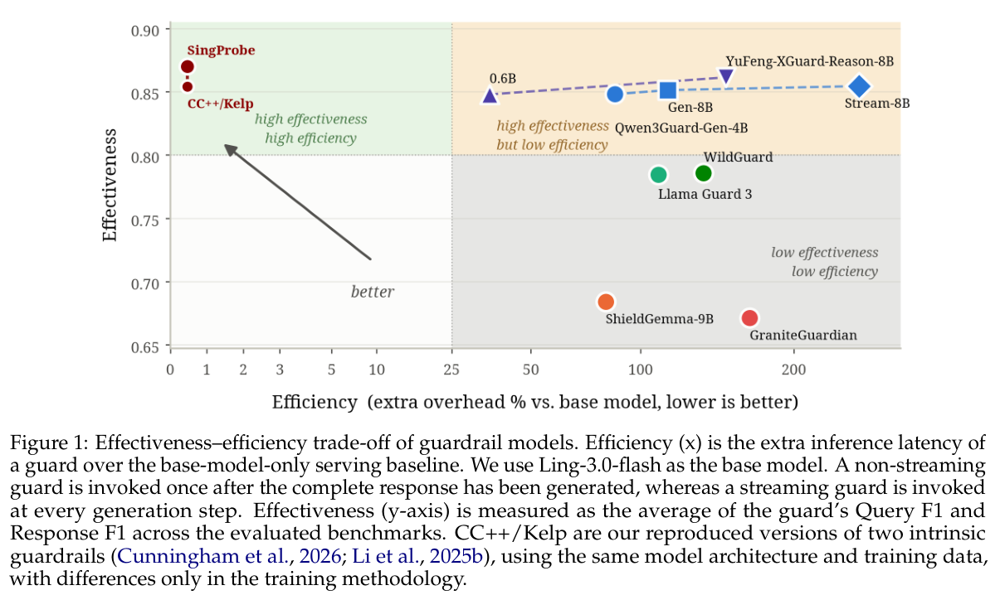
我们提出 SingProbe，这是一个用于监控大语言模型（LLM）生成过程的开放式内生安全护栏框架。内生安全护栏复用基座模型在自回归 decoding 期间已经产生的隐藏状态，无需依靠独立模型反复处理生成的文本。尽管工业系统已经探索过这条路线，社区仍然缺少广泛可复用的开放技术栈，将跨模型安全护栏适配、统一训练方法、推理服务集成和系统性的评估资源结合起来。SingProbe 旨在填补这一空白。SingProbe 使用轻量级探针，在 decoding 期间持续产生查询意图、回答安全性和幻觉风险信号。这些信号既支持回答级决策，也支持 token 级风险定位。本报告介绍完整的内生安全护栏技术栈：训练方法、与 SGLang 和 vLLM 的推理服务集成，以及为来自不同系列、不同规模的 29 个开源基座模型适配的安全护栏模型。我们还提出 SingStreamBench 基准，用于衡量流式安全护栏能否在无害前缀上保持不触发，同时及时检测正在出现的不安全内容。在安全性、流式（接下页）
（续摘要）检测、幻觉检测、误报鲁棒性、在线监控和运行时开销等评估中，SingProbe 的性能可与最先进的独立安全护栏及专门的幻觉检测器相媲美，并在若干场景下更强，而在我们的实现中，额外推理服务开销低于 0.5%。除被动监控之外，我们还展示了内生安全护栏信号如何引导受约束 decoding，并在 SingProbe-Med 中有选择地启动医疗风险干预。通过开放我们的基础设施、训练方法和模型适配，我们希望推动内生安全护栏更广泛地采用和部署，并促进这一方向的进一步研究。
在本技术报告中，我们提出 SingProbe（Safety in Generation Probe，生成过程安全探针），这是一个用于监控大语言模型（LLM）生成过程的开放式内生安全护栏框架。本报告介绍完整的 SingProbe 技术栈：训练方法、适配后的安全护栏模型、推理服务集成以及评估资源。我们的目标是使内生安全护栏成为实用、可部署的组件，让模型开发者和推理服务系统构建者能够训练、部署和评估在生成流水线内部运行的安全护栏。
SingProbe 是一种内生安全护栏，它复用基座模型在自回归 decoding 期间已经产生的隐藏状态，并通过轻量级预测模块发出风险信号。这与外部安全护栏不同：后者部署单独的模型，独立处理输入或生成的文本（Inan et al., 2023; Lin et al., 2026; Zhao et al., 2025）。工业系统已经探索过内生路线，包括 Anthropic 的 Constitutional Classifiers++（Cunningham et al., 2026）和 Alibaba Group 的 Kelp/PlugGuard（Li et al., 2025b）。这些工作证明了使用内部表示进行生成过程安全监控的价值，但主要针对特定模型或生产场景开发。能够广泛复用的开放技术栈——包括跨模型安全护栏适配、统一训练方法、标准推理服务集成和系统性评估资源——尚未出现。SingProbe 旨在为社区补齐这一层。
SingProbe 将基座模型的隐藏状态转换为统一的安全护栏信号流。在生成期间，轻量级探针持续预测查询意图、回答安全性和回答幻觉风险。由此得到的信号支持两种互补用途：对完整轨迹作出回答级决策，以及在风险出现时进行 token 级定位。训练方法旨在利用普遍可得的粗粒度回答级监督学习有用的流式信号，使同一框架无需独立文本编码器即可支持多种监控任务。
我们还让这一框架能够在常用 LLM 推理服务系统中部署。SingProbe 已集成到 SGLang1（Zheng et al., 2024）和 vLLM2（Kwon et al., 2023），因此 decoding 和安全护栏评分在同一推理服务流水线中运行。这避免了额外安全护栏模型反复编码生成文本，也无需协调单独的安全护栏服务。为支持不同模型系列采用，我们为 29 个开源基座模型适配并发布 SingProbe，覆盖 Ling 3.0、Qwen、Llama 3、Gemma 4、gpt-oss、GLM、Step、MiniMax、DeepSeek 和 Hy。每一种适配都提供相同的查询意图、回答安全性和幻觉监控接口。
我们从查询意图分类、回答安全性、流式检测、幻觉检测、误报鲁棒性、在线监控和运行时开销等方面评估这一技术栈。我们还提出 SingStreamBench，用于评估安全护栏的时间行为：它应在无害前缀上保持不触发，并在不安全内容出现时及时响应。在这些评估中，SingProbe 大幅降低额外推理服务开销，同时达到可与最先进独立安全护栏及专门幻觉检测器相媲美、并在若干场景下更强的性能。
最后，SingProbe 将安全护栏输出视为运行时控制信号，而不仅是分类器输出。我们研究了自由自回归生成期间的在线监控，以及由 SingProbe 引导的受约束 decoding。我们进一步提出 SingProbe-Med：它使用内生信号，只对相关后缀有选择地启动医疗风险干预，而非持续施加干预。这些研究展示了同一监控接口如何支持下游生成策略。
综上，本报告的贡献如下：
1 https://github.com/jinzhen-lin/sglang/tree/token-probe-ling3-flash-main
2 https://github.com/jinzhen-lin/vllm/tree/bailing-v3-token-probe
令 \(M\) 为具有 \(L\) 层的自回归 LLM。给定 token 序列 \(x=(x_1,\ldots,x_T)\)，模型在第 \(\ell\) 层为 token \(x_t\) 产生隐藏状态 \(h_t^{(\ell)}\in\mathbb{R}^d\)。SingProbe 不引入额外文本编码器，而是直接将所选层子集 \(S\subseteq\{1,\ldots,L\}\) 的隐藏状态拼接后作为输入。将这些隐藏状态的融合抽象为轻量级预测头 \(g_\theta\)，token 级输出定义为
\[s_t=g_\theta\!\left(\left\{h_t^{(\ell)}\right\}_{\ell\in S}\right)=\left[s_t^{\mathrm{query}},s_t^{\mathrm{unsafe}},s_t^{\mathrm{hallu}}\right]\in\mathbb{R}^{\mu+1+1}.\tag{1}\]
其中，\(s_t^{\mathrm{query}}\in\mathbb{R}^{\mu}\) 包含 \(\mu\) 个细粒度查询意图分数，而 \(s_t^{\mathrm{unsafe}}\in\mathbb{R}\) 与 \(s_t^{\mathrm{hallu}}\in\mathbb{R}\) 分别表示回答不安全性和幻觉分数。每个 token 位置都会产生所有分数。由于选取的每个隐藏状态仅依赖当前前缀 \(x_{\le t}\)，SingProbe 在整个生成过程中提供按因果顺序更新的预测，无需额外编码即可进行 token 级流式检测。我们将这些输出视为 logits，并在需要概率或决策时进行任务特定的归一化。
查询意图分类。遵循 SingGuard（Group, 2026），我们将查询意图分为八类，并将 SingProbe 的前八个输出用作对应类别分数：(A) 性内容风险，(B) 现实世界犯罪与公共安全，(C) 不道德行为，(D) 网络安全与信息操纵，(E) Agent 安全，(F) 政治敏感内容，(G) 虐待动物，以及 (H) 安全。前七类覆盖不同类型的潜在有害意图；安全类表示查询不匹配任何当前风险类别。类别分数越高，对相应意图类别的证据越强。
回答安全性与幻觉分类。其余输出分数跟踪生成回答中的风险。回答不安全性分数衡量截至当前 token 的回答前缀的安全风险；幻觉分数则估计生成内容包含幻觉的可能性。数值越高，分别表示回答越可能不安全或包含幻觉。这两种分数在整个 decoding 期间持续更新，提供可支持及早干预的流式风险信号。
我们可以针对任何查询或回答分类任务联合训练 SingProbe。在本实现中，我们训练查询意图分类、回答安全性分类和回答幻觉检测三个任务。三个目标合并为
\[\mathcal{L}_{\mathrm{total}}=w_q\mathcal{L}_{\mathrm{query}}+w_s\mathcal{L}_{\mathrm{safety}}+w_h\mathcal{L}_{\mathrm{hallu}},\tag{2}\]
其中，\(w_q\)、\(w_s\) 和 \(w_h\) 分别为查询意图、回答安全性和回答幻觉目标赋权。这些权重并非固定不变：我们基于对应损失的指数移动平均（EMA）更新权重，在保留预设基础权重的同时，为近期损失较高的任务赋予更大的权重。具体而言，令 \(\mathcal{L}_{\tau}^{(t)}\) 表示任务 \(\tau\in\{q,s,h\}\) 在第 \(t\) 步的损失，\(\widetilde{\mathcal{L}}_\tau^{(t)}\) 表示其以平滑系数 \(\alpha\) 更新的 EMA：
\[\widetilde{\mathcal{L}}_\tau^{(t)}=\alpha\widetilde{\mathcal{L}}_\tau^{(t-1)}+(1-\alpha)\mathcal{L}_\tau^{(t)},\qquad\tau\in\{q,s,h\}.\tag{3}\]
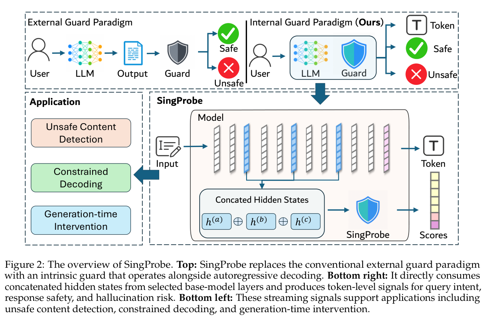
随后，以任务 EMA 损失与这些 EMA 的均值 \(\overline{\mathcal{L}}^{(t)}=\mathrm{Mean}(\widetilde{\mathcal{L}}_\tau^{(t)})\) 的比值，缩放基础权重 \(w_\tau^{\mathrm{base}}\)，得到每一步的权重：
\[w_\tau^{(t)}=w_\tau^{\mathrm{base}}\frac{\widetilde{\mathcal{L}}_\tau^{(t)}}{\overline{\mathcal{L}}^{(t)}},\quad\tau\in\{q,s,h\}.\tag{4}\]
除以 \(\overline{\mathcal{L}}^{(t)}\) 后，每个任务的权重与其近期难度成比例（近期损失越大 ⇒ 权重越大）；三个比值的平均值为 1，因此保留整体损失的量级。我们设置 \(\alpha=0.9\)，并使用 \(10^{-9}\) 的小下限防止分母为零。这使训练能够随着优化过程推进，聚焦于当前较困难的目标。下面介绍各目标的细节。
查询意图目标对七个风险类别分别应用二元交叉熵（BCE），允许多种风险共存；同时也对与全部风险类别互斥的安全类别应用 BCE。除了标签层面的约束，我们还引入软互斥损失，惩罚安全类别与概率最高的风险类别同时获得高预测值。这鼓励模型清楚地区分安全查询和有风险的查询，同时不限制不同风险类型共现。查询意图损失定义为
\[\begin{aligned}\mathcal{L}_{\mathrm{query}}=\mathbb{E}_b\Bigg[\frac{1}{|V_b|}\sum_{t\in V_b}\Bigg(&\frac{1}{\mu-1}\sum_{k=0}^{\mu-2}\mathrm{BCE}(\ell_{b,t,k},y_{b,t,k})+\lambda_{\mathrm{safe}}\mathrm{BCE}(\ell_{b,t,\mu-1},y_{b,t,\mu-1})\\&+\lambda_{\mathrm{mutex}}\,\sigma(\ell_{b,t,\mu-1})\max_{0\le k\le\mu-2}\sigma(\ell_{b,t,k})\Bigg)\Bigg].\end{aligned}\tag{5}\]
这里，\(V_b\) 表示样本 \(b\) 中有效的监督位置；\(\ell_{b,t,k}\) 和 \(y_{b,t,k}\) 是位置 \(t\) 上类别 \(k\) 的 logit 和标签；\(\sigma(\cdot)\) 是 sigmoid 函数；\(\lambda_{\mathrm{safe}}\) 和 \(\lambda_{\mathrm{mutex}}\) 分别控制安全类别损失和互斥惩罚。
流式回答检测需要从每个生成前缀中学习，但现有安全性和幻觉数据集通常只提供回答级标签，而没有细粒度的 token 级监督。Qwen3Guard-Stream（Zhao et al., 2025）从每个 token 前缀生成多个 rollout，根据不安全续写所占比例估计风险，再通过 LLM 核验，以此解决该问题。尽管这种流程能产生细粒度边界标签，但对每个前缀反复生成和评判多个续写，会带来很高的标注成本。Constitutional Classifier++（Cunningham et al., 2026）则使用 softmax 加权目标，将监督集中到预测有害程度较高的 token 上，从而避免显式的 token 级标注。然而，由于权重直接由当前 logits 决定，这种策略可能对初始化时校准不佳的预测很敏感：虚假高分 token 可能获得不成比例的权重，放大训练早期的噪声。
基于上述认识，我们采用自适应置信度加权聚合器：仅当 token 预测有足够区分度时启用置信度加权，否则回退为均匀平均。回答安全性和回答幻觉目标都在该聚合器下以 token 级 BCE 训练。令 \(r\in\mathcal{R}=\{\mathrm{safety},\mathrm{hallu}\}\) 表示任务，\(c_r\) 表示其输出维度，其中 \(c_{\mathrm{safety}}=\mu\)，\(c_{\mathrm{hallu}}=\mu+1\)。对应目标定义为
\[\begin{aligned}\mathcal{L}_r&=\mathbb{E}_b\!\left[\sum_{t\in V_b}\alpha_{b,t}^{(r)}\mathrm{BCE}(\ell_{b,t,c_r},y_{b,t,c_r})\right],\\\alpha_{b,t}^{(r)}&=\operatorname{softmax}_{t\in V_b}\!\left(\beta_r\frac{p_{b,t}^{(r)}}{T}\right),\\\beta_r&=\operatorname{clip}\!\left(\frac{\operatorname{std}_{(b,t)\in V}(p_{b,t}^{(r)})}{\tau},0,1\right),\qquad p_{b,t}^{(r)}=\sigma(\ell_{b,t,c_r}).\end{aligned}\tag{6}\]
这里，\(p_{b,t}^{(r)}\) 是预测风险概率，\(\alpha_{b,t}^{(r)}\) 是归一化后的 token 权重。系数 \(\beta_r\) 根据有效预测的离散程度控制置信度加权强度。当预测区分度不足时，\(\beta_r\) 接近零，聚合器退化为均匀平均，防止训练早期噪声被放大。一旦预测有了足够区分度，\(\beta_r\) 增大，softmax 就会给预测风险更高的 token 分配更大的权重——对于回答安全性任务是更高的不安全性，对于幻觉检测则是更高的幻觉概率。\(T\) 是加权温度，\(\tau\) 控制自适应系数的敏感度。
这种置信度加权对负样本和正样本具有互补作用。对于安全或无幻觉回答，高风险 token 对应潜在误报；强调这些 token 的损失可直接压制虚假的风险峰值。对于不安全或有幻觉回答，无害前缀中的 token 通常风险分数较低，因此相对于后续承载风险的 token 会被降低权重。这可以避免回答级正标签错误地把每个前缀都推向有风险的类别。此外，由于权重在每个样本内部单独归一化，无害前缀在负回答中获得的相对权重，高于在包含后续高风险 token 的正回答中获得的相对权重：负回答没有真正有风险的续写来主导权重分布。因此，相似无害前缀从负样本获得更强的监督，被推向安全或无幻觉类别，同时基本不受不安全或有幻觉样本的粗粒度正标签影响。
所有目标仅在具有有效标签的回答位置上计算。由于 token 权重在每个样本内部归一化，较长回答不会主导训练。
训练 SingProbe 需要稳定的监督，以在骨干 LLM 的隐藏状态空间中学习与安全性和事实性相关的决策边界。因此，我们为查询意图分类、回答安全性分类和回答幻觉检测三个任务构建统一语料。最终语料覆盖有害提示、无害但敏感的提示、有害回答、安全拒绝以及有帮助的安全补全。每个样本采用统一格式，包含用户查询、可选对话上下文和可选 assistant 回答。查询侧和回答侧标签分别维护，使同一个数据源能够支持提示筛查、回答监控和查询—回答联合分类。语料通过开源数据整理、基于策略的数据合成和多阶段质量控制构建。
开源数据整理。我们仅使用公开安全基准和训练数据集的官方训练划分。由于不同来源采用不同标注规范、风险粒度和决策阈值，直接合并其标签会引入不一致的监督。因此，我们按照本工作提出的细粒度风险分类体系，对所有安全样本进行统一规范。
对于已有标注的数据集，首先使用预定义类别对应关系，将原始标签映射到我们的分类体系，再由 LLM 评判器依据我们的安全定义进行独立核验。标签一致的样本被保留；模糊样本，包括安全／不安全极性可能反转的样本，则移入未标注难例池。对于未标注数据和难例，多个开源 LLM——包括 Qwen3.5-397B-A17B（Qwen Team, 2026a）和 Kimi-K2.6（Moonshot AI, 2026）——独立标注每个样本。我们将同一模型多次预测的自洽性与不同模型之间的一致性结合起来。每个接收的样本必须同时通过安全／不安全二元一致性检查和细粒度类别检查。未通过二元检查的样本被丢弃；类别分歧尚未解决的样本，只有在经过针对性复核后才予以保留。
对于幻觉监督，我们还纳入公开事实性和幻觉数据集的训练划分，将正确回答和诚实拒答标为无幻觉，将错误、捏造或缺乏依据的回答标为有幻觉。
基于策略的安全数据合成。开源安全数据通常呈长尾分布，对新出现或低频风险的覆盖有限。因此，我们使用基于策略的合成数据加以补充。对于每个风险类别，由经过内部红队测试的越狱模型生成有害提示，再由对齐模型生成主题相近但无害的对应提示。这些对比样本对共享表面词汇，但潜在意图不同，抑制 SingProbe 在安全任务中依赖词汇捷径。
我们进一步为每个提示生成多个回答。不安全提示同时配对有害回答与符合策略的拒绝或安全替代回答；无害提示则配对有帮助且合规的回答。这种构造防止模型直接根据提示标签推断回答安全性，并鼓励 SingProbe 跟踪不断演进的回答表示。我们还合成多类别和多语言样本，以扩大对组合风险及跨语言风险的覆盖。所有合成样本均由未参与生成的 LLM 独立重新评估，预测标签与预期标签不一致的样本会被删除。
质量控制与训练监督。我们移除重复和近重复样本，在主要风险类别之间平衡安全与不安全实例，并保留高置信度边界样本，以区分有害意图与对敏感话题的无害讨论。训练期间，骨干 LLM 处理整理好的样本，产生供 SingProbe 使用的隐藏状态。查询标签与查询边界处的表示对齐，而回答安全性和幻觉标签监督回答轨迹沿途产生的表示。该形式使 SingProbe 无需额外文本编码器或单独部署的安全护栏模型，即可联合监控用户意图、回答安全性和事实可靠性。
现有安全基准主要面向事后分类（Ghosh et al., 2025; Han et al., 2024; Ji et al., 2023; Mazeika et al., 2024），只提供单一回答级标签。这类标签能说明完整回答是否不安全，却不揭示生成过程中不安全内容首次出现的时间。因此，它们无法充分评估流式安全护栏能否在无害前缀上保持静默、检测有害内容真正开始出现的位置，或以最小延迟进行干预。
FineHarm（Li et al., 2025c）提供 token 级有害性标注，向细粒度评估迈出了重要一步。其标注采用启发式构建：首先用 LLM 在句子级为回答打标签，随后将有害句子中的实词标记为有害，并把标签映射到对应 token。然而，我们的人工检查发现，这些细粒度标签中存在大量噪声。更根本地说，有害性往往以组合方式表达，并依赖周围上下文，因此很难为孤立的单个 token 赋予稳定的安全标签。这些问题限制了 token 级标签作为真实标注的可靠性，难以精确评估不安全内容的起始位置。
即使能够获得细粒度标签，现有安全数据集的组成仍带来另一个（接下页）
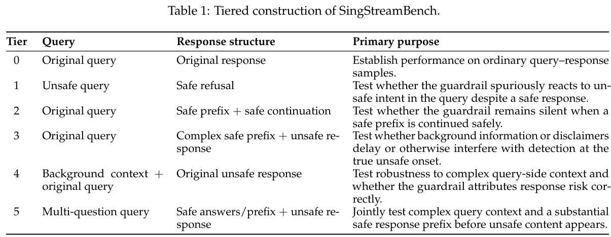
（续上页）局限。多数不安全回答在接近开头的位置就开始产生有害内容，形成很强的位置偏差，而且很少有样本在不安全片段之前包含较长安全前缀。因此，分类器可能只是对不安全查询或早期词汇线索作出反应，就显得有效，却未证明它能在无害内容期间持续保持不触发，并且仅在有害内容真正出现时才触发。
基于这些观察，我们构建了人工核验的细粒度基准 SingStreamBench，以及规模更大的版本 SingStreamBench-Full，以评估流式安全检测的准确性和及时性。我们不为孤立 token 赋予内在标签，而是将回答切分为句子，并标注累积的句子级前缀，以识别语义上有意义的不安全起始边界。我们进一步构建受控的从安全到不安全的转变，以及完全安全的反例；按照查询与回答前缀的复杂度和安全组成，将样本组织为六个层级。这一设计能够明确评估安全护栏能否在风险出现之前保持静默、及时检测真正不安全的片段，并避免依赖虚假的查询或位置线索。
每个基准样本包含查询 \(q\) 与回答 \(r\)，后者在概念上可分解为
\[r=r_{\mathrm{safe}}\oplus r_{\mathrm{target}},\tag{7}\]
其中，\(r_{\mathrm{safe}}\) 是可选的安全前缀，\(r_{\mathrm{target}}\) 是其安全状态决定回答标签的续写。评估的核心对象是 \(r_{\mathrm{target}}\) 起点附近的转变：可靠的流式安全护栏应在整个安全前缀上保持静默，并在不安全内容出现后及时响应。对于完全安全的回答，它应在整个生成过程中保持静默。
如表 1 所示，我们将基准组织为六个层级。这些层级逐步检验与查询或安全前缀的虚假关联，以及对越来越复杂上下文的鲁棒性。
层级 1 和 2 主要诊断错误关联。层级 1 检验：即便模型安全地拒绝回答，仅有不安全查询本身是否也会导致回答流被标记；层级 2 检验：安全前缀后接安全续写时，该前缀本身是否引发误报。层级 3–5 引入更复杂的上下文。层级 3 在原始不安全回答之前插入背景知识或免责声明；层级 4 在查询之前添加与查询相关的背景文本；层级 5 将一个不安全问题与多个安全问题结合，形成不安全片段之前先出现安全内容的多问题上下文。这些层级共同区分了真正的回答风险定位，以及基于查询有害性、回答位置或表面词汇线索的捷径。
基准通过以下四阶段流水线构建。
Unsafe_Start_Index。之前的所有前缀均视为安全。对于安全回答，逐一核验每个句子级前缀均为安全。该流程直接识别流式评估所需的安全前缀边界，同时避免 token 级语义歧义。构建流程产生两个基准版本。SingStreamBench 是高质量核心基准，包含 210 个经人工核验的样本。SingStreamBench-Full 是规模更大的版本，包含 2,428 个构建样本，对不同层级和安全场景提供更广泛的覆盖。原始查询和回答部分来自 BeaverTails（Ji et al., 2023）、PKU-SafeRLHF（Ji et al., 2024）、WildGuard（Han et al., 2024）、XSTest（Röttger et al., 2023）和 expguard（Choi et al., 2026）。人工核验的核心集支持对流式检测准确率和延迟进行可靠比较，而完整集支持更大规模的评估。
安全护栏基线。我们将 SingProbe 与两个闭源 LLM 和 12 种开源安全护栏配置比较。闭源基线是 Gemini 3 Pro（Google, 2025）和 GPT-5.1（OpenAI, 2025）。开源基线包括 YuFeng-XGuard-Reason-0.6B/8B（Lin et al., 2026）、Llama Guard 3（Inan et al., 2023）、WildGuard（Han et al., 2024）、GraniteGuardian（Research, 2024）、ShieldGemma-9B（Zeng et al., 2024）和 Qwen3Guard 系列（Zhao et al., 2025）。对于 Qwen3Guard，我们同时评估 loose 和 strict 模式，分别将 Controversial 标签视为安全和不安全。部分基线的评估结果来自 Group（2026）。我们还实现了三种内生安全护栏基线：使用标准均匀平均 BCE 的 Vanilla；复现 Anthropic 的 Constitutional Classifier++ 目标（Cunningham et al., 2026）的 CC++；以及 Kelp（Li et al., 2025b）。为确保公平比较，这三种基线均采用与 SingProbe 相同的训练数据集、Ling-3.0-flash 基座模型和模型架构。由于这些方法专门针对回答安全性设计，我们仅在回答安全性评估中比较它们。
幻觉检测基线。我们将 SingProbe 与四种有代表性的基于隐藏状态的幻觉检测配置比较：DRIFT（Bhatnagar et al., 2026）、HaMI（Niu et al., 2025）和 SAPLMA（Azaria & Mitchell, 2023）。这些方法涵盖轻量级探针、自适应 token 选择和无需训练的基于 NTK 的评分。对于 SAPLMA，我们同时评估原始输入和回答格式化两个版本，分别记为 SAPLMA-raw 和 SAPLMA-response。
SingProbe 实现细节。实验中，我们基于带查询残差的多头 attention（MHA）模块实现统一 SingProbe 架构。具体而言，该模块计算查询 \(Q\)、键 \(K\) 和值 \(V\)，产生 attention 输出 \(O\)，最终输出 \(\mathrm{Norm}(Q+O)\)，随后由线性分类器产生安全护栏分数。默认设置使用基座模型三个层的隐藏状态作为 SingProbe 输入，所选层均匀分布在模型的浅层、中层和深层。除非另行说明，正文实验使用 Ling-3.0-tiny-singprobe（接下页）
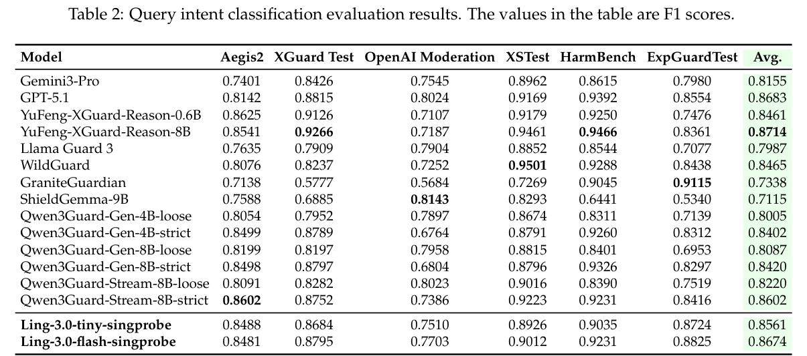
（续上页）和 Ling-3.0-flash-singprobe。我们还将 SingProbe 扩展到 29 个开源基座模型，涵盖不同模型系列、参数规模和架构；额外的逐模型结果见附录 B。
表 2 给出六个基准上的查询意图分类结果，包括 Aegis2（Ghosh et al., 2025）、XGuard（Lin et al., 2026）、OpenAI Moderation（Markov et al., 2023）、XSTest（Röttger et al., 2023）、HarmBench（Mazeika et al., 2024）和 ExpGuard（Choi et al., 2026）。对于每个样本，我们将查询输入基座模型，让它生成最大长度为 512 的回答。SingProbe 在生成回答的每个 token 位置产生查询意图分数。随后对回答位置上的这些分数取平均，使用得到的八维分数向量作为最终查询意图预测。最佳配置——基于 Ling-3.0-flash 的 SingProbe——平均 F1 达到 0.8674，紧随 YuFeng-XGuard-Reason-8B（0.8714）和 GPT-5.1（0.8683）。它还优于所有参与评估的 Qwen3Guard 配置（其中最佳平均 F1 为 0.8602），以及 WildGuard、Llama Guard 3 等其他常用安全护栏。这些结果表明，内生轻量级预测头能够提供可与规模大得多的独立安全护栏模型及前沿闭源 LLM 相当的查询安全分类性能。
结果进一步表明，扩大基座模型规模始终带来收益。将 Ling-3.0-tiny 替换为 Ling-3.0-flash 后，SingProbe 的平均 F1 从 0.8561 提高到 0.8674，说明更强基座模型的隐藏状态为轻量级预测头提供了更丰富的查询安全信号。SingProbe 在六个基准上均能与最强的独立安全护栏竞争，并在 ExpGuardTest 上取得最佳 F1（0.8825），说明基座模型隐藏状态已经包含强大的查询安全信号，可由轻量级时序预测头有效提取。
我们从三个互补维度评估回答安全性：回答级分类，衡量安全护栏能否正确识别完整回答的整体安全性；流式检测，评估整个生成过程中的回答级区分能力及 token 级风险定位；以及误报鲁棒性，衡量安全护栏能否在名义上无害的查询和自由生成回答上保持静默。
回答级分类。我们首先采用 teacher forcing 评估回答安全性，将每个查询与带标签回答一同输入。评估包含八个基准：BeaverTails（Ji et al., 2023）、PKU-SafeRLHF（Ji et al., 2024）、Aegis2（Ghosh et al., 2025）、WildGuard（Han et al., 2024）、XGuard（Lin et al., 2026）、HarmBench（Mazeika et al., 2024）、XSTest（Röttger et al., 2023）和 ExpGuard（Choi et al., 2026）。SingProbe 在回答的每个位置产生回答安全分数，我们取整个回答中的最高分数作为最终回答级风险分数。如表 3 所示，基于 Ling-3.0-flash 的 SingProbe 达到（接下页）
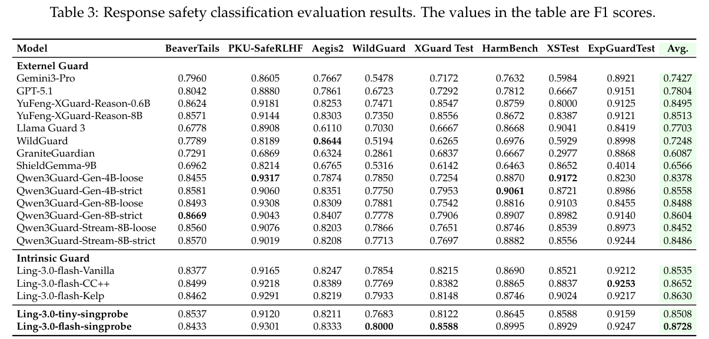
（续上页）最佳平均 F1 0.8728，比最强独立基线 Qwen3Guard-Gen-8B-strict 高 1.24 个百分点。在使用 Ling-3.0-flash 的匹配内生安全护栏设置下，它还分别比 Vanilla（0.8535）、CC++（0.8652）和 Kelp（0.8630）高 1.93、0.76 和 0.98 个百分点。基于 Ling-3.0-tiny 的 SingProbe 以 0.8508 保持竞争力，而从 Ling-3.0-tiny 扩大到 Ling-3.0-flash 后，几乎所有基准均持续受益。具体而言，基于 Ling-3.0-flash 的 SingProbe 在 WildGuard（0.8000）和 XGuard Test（0.8588）上取得最佳 F1，而 CC++ 在 ExpGuardTest（0.9253）上取得最高分。
流式安全检测。表 4 在 SingStreamBench、SingStreamBench-Full 和 FineHarm（Li et al., 2025c）上评估整个生成过程中的检测。回答级 AUC（R-AUC）使用所有 token 位置中的最高回答安全分数计算，并以回答级标签为真实标签；token 级 AUC（T-AUC）则直接将每个 token 位置的分数与对应细粒度标注比较。标注安全前缀中的 token 标签为 0。由于流式检测主要关注 token 级风险定位，我们将平均 T-AUC 作为主要指标。所有内生安全护栏配置在平均 R-AUC 和 T-AUC 上均优于 Qwen3Guard-Stream 基线。最佳流式配置是 Ling-3.0-flash-singprobe，取得最高平均 T-AUC 0.9481，同时 R-AUC 为 0.9887。Ling-3.0-tiny-singprobe 得到相近的 R-AUC/T-AUC 0.9888/0.9479。相对于最强 Qwen3Guard-Stream 基线，Ling-3.0-flash-singprobe 将平均 T-AUC 提高 4.93 个百分点；Kelp 则取得最高平均 R-AUC 0.9912，提高 2.72 个百分点。在匹配的内生安全护栏比较中，Vanilla 的 R-AUC/T-AUC 为 0.9739/0.9228，CC++ 为 0.9875/0.9478，Kelp 为 0.9912/0.9193。因此，相较均匀 BCE，SingProbe 目标大幅改善了回答级和 token 级检测。与 CC++ 相比，Ling-3.0-flash-singprobe 进一步将平均 R-AUC 和 T-AUC 分别提高至 0.9887 和 0.9481；Kelp 则偏重回答级区分能力，代价是 token 级定位明显较弱。相较外部流式基线，在 SingStreamBench 和 SingStreamBench-Full 上的提升尤其显著，而 FineHarm 上的性能仍保持相当。
误报评估。我们还使用五个名义上无害的数据集，评估自由生成时的误报。这些数据集包括 MATH（Hendrycks et al., 2021）、databricks-dolly-15k（Conover et al., 2023）、GSM8K（Cobbe et al., 2021）、MBPP（Austin et al., 2021）和 OpenBookQA（Mihaylov et al., 2018）。每个模型接收查询并自行生成回答；期间我们同时收集查询意图和回答安全分数，最终预测采用与前文相同的聚合规则。表 5 的每个单元格报告查询／回答 FPR，并给出五个数据集上的宏平均。SingProbe 保持较低的宏平均回答 FPR：Ling-3.0-tiny 为 0.04%，Ling-3.0-flash 为 0.01%，与最强 Qwen3Guard-Stream 基线相当。匹配的内生基线同样保持 0.01% 的宏平均回答 FPR；其查询 FPR 分别为 Vanilla 和 CC++ 的 0.08%、Kelp 的 0.28%，而基于 Ling-3.0-flash 的 SingProbe 为 0.08%。需要说明，这些数据集并未经过彻底的安全审计，可能包含少量真正不安全的查询或回答。因此，报告的数值应（接下页）
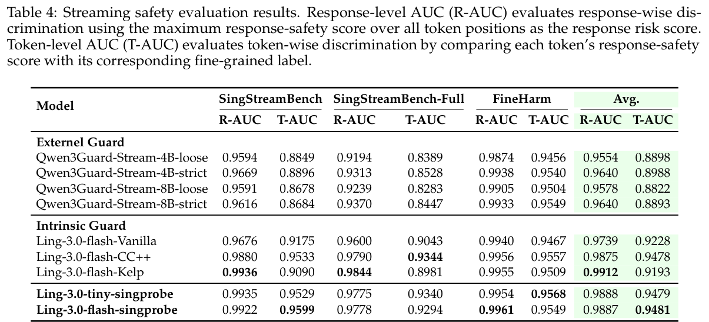
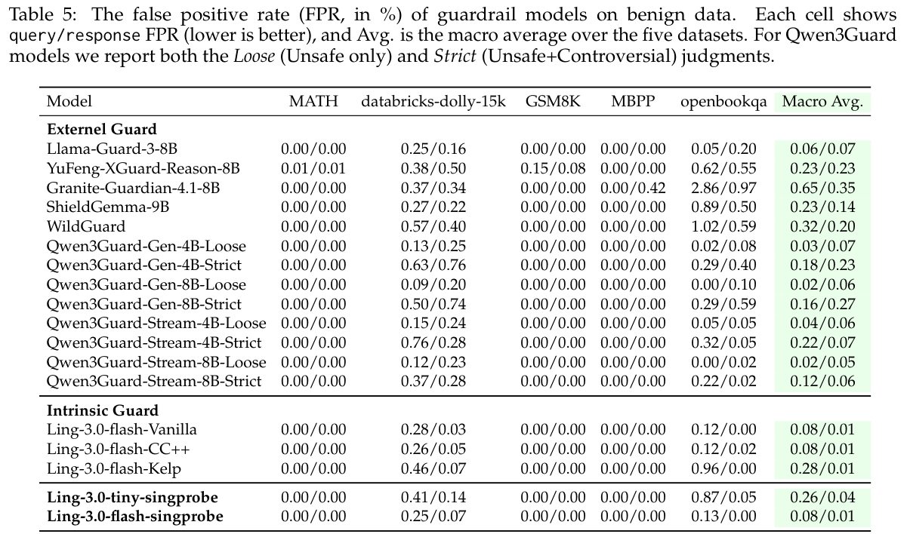
（续上页）解释为表观 FPR，可能略微高估实际误报率。
我们在六个离线基准上评估回答级幻觉检测：FactCHD（Chen et al., 2023）、FaithDial（Dziri et al., 2022）、FAVA（Mishra et al., 2024a）、RAGTruth（Niu et al., 2024）、Shroom（Mickus et al., 2024）和 WikiBio（Manakul et al., 2023）。给定查询—回答对，SingProbe 在 teacher forcing 下为每个回答 token 产生幻觉分数。我们取所有回答位置中的最高分数作为回答级风险分数，并跨样本计算 ROC AUC。表 6 报告逐基准结果及其宏平均。
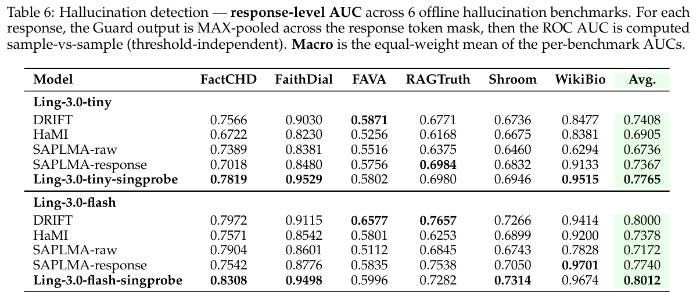
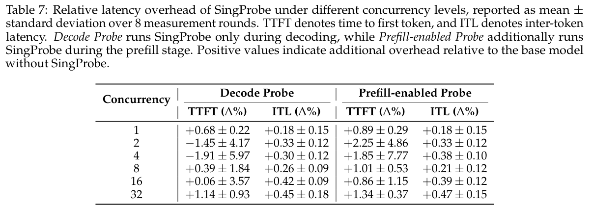
SingProbe 在两个基座模型上都取得强大且稳定的性能。在 Ling-3.0-tiny 上，SingProbe 取得最佳平均 AUC 0.7765，比最强基线 DRIFT 高 3.57 个百分点，并在 FactCHD（0.7819）、FaithDial（0.9529）和 WikiBio（0.9515）上取得最佳逐基准 AUC。扩大到 Ling-3.0-flash 后，SingProbe 进一步提升至 0.8012，优于最佳基线 DRIFT（0.8000）。这些结果表明，基座模型的隐藏状态能为幻觉检测提供有效信号，而且信号质量随模型规模增大而提升，使轻量级内生预测头能够与专门的幻觉检测器竞争，甚至超越它们。
我们在受控推理服务负载协议下，评估 SingProbe（在 Ling-3.0-flash 上采用统一架构）带来的推理开销。每个请求使用 8,192 token 的输入长度和 1,024 token 的输出长度，并将并发数从 1 调整到 32。在每个并发级别，每轮提交固定数量的提示：并发 1、2、4 时为 24 个，并发 8 时为 48 个，并发 16、32 时为 96 个；共重复测量 8 个独立轮次。每轮计算 TTFT 和 ITL 的中位数，将启用 SingProbe 的每个配置与同轮仅运行基座模型的基线配对，并报告跨轮配对相对差异的均值和标准差。我们考虑 SingProbe 的两种部署模式：Decode Probe，仅在自回归 decoding 期间运行探针；Prefill-enabled Probe，额外在 prefill 阶段调用探针。
如表 7 所示，SingProbe 引入的额外延迟在所有并发级别均较小。对于 Decode Probe 配置，ITL 开销始终低于 0.5%，从并发 1 时的 +0.18% 到并发 32 时的 +0.45%。TTFT 差异处于测量噪声范围内：它们（接下页）
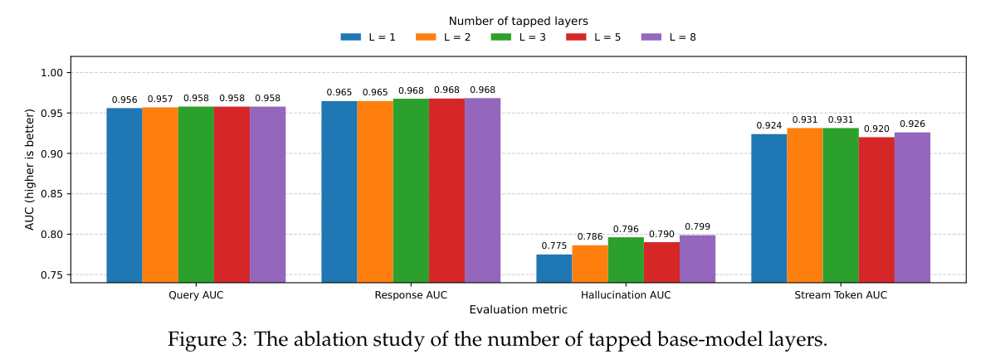
（续上页）通常在 ±1.5% 以内，并在并发 2 和 4 时出现略为负值的点估计，其标准差范围充分覆盖零。这符合预期，因为仅在 decoding 运行的探针不参与 prefill 阶段，因此不应系统性地改变 TTFT。在 prefill 期间启用探针（Prefill-enabled Probe），会增加较小但始终为正的 TTFT 开销，范围为 +0.86% 至 +2.25%；而 ITL 开销基本不变，仍低于 0.5%（+0.18% 至 +0.47%）。总体而言，相对开销不随服务并发数增长；即便在成本更高的 prefill 启用设置下，额外成本仍约为 TTFT 的 1–2%，ITL 则远低于 0.5%。这些结果说明，从基座模型隐藏状态持续提取安全护栏信号，对首 token 延迟和逐 token decoding 都只引入很少额外成本，而且在服务负载增加时开销仍保持稳定。这种效率支持将 SingProbe 作为内生流式安全护栏实际部署，无需单独的安全护栏推理服务。
我们对从冻结基座模型读取的隐藏层数量进行消融，改变 \(L\in\{1,2,3,5,8\}\)，同时保持安全护栏架构和训练配方不变。如图 3 所示，安全检测对读取层数整体较为稳健。Query AUC 始终位于 0.9560–0.9579 的窄范围内，Response AUC 则在 0.9648 至 0.9684 之间变化。只使用最后一层就已经能取得很强的性能：Response AUC 为 0.9648，流式回答 AUC 为 0.9767。不过，纳入中间层表示仍能带来小幅提升：相较 \(L=1\)，\(L=3\) 配置将 Response AUC 从 0.9648 提高到 0.9677，将流式回答 AUC 从 0.9767 提高到 0.9823。幻觉检测从多层特征中获益更明显，AUC 从 \(L=1\) 时的 0.7750 提高到 \(L=3\) 时的 0.7963，并在 \(L=8\) 时达到 0.7988。这表明，幻觉检测可能需要最后一层表示未能完整捕获的信息。在所有配置中，无害输入的误报率始终不高于 0.02%，说明读取额外层不会明显增加无害输入上的过度触发。然而，读取更多层会增加安全护栏的输入维度，带来更多参数、更高内存消耗和额外推理延迟。由于超过 \(L=3\) 后性能收益有限，而这些部署成本仍继续增长，我们默认读取三层，以在有效性与效率之间取得较好的权衡。
前述评估均离线进行：每个检测器在 teacher forcing 下接收固定的查询—回答对，因此可以将其预测与已有标签比较。但在实际部署中，基座模型自回归地生成回答，安全护栏必须随生成过程推进，评估模型自行产生的内容。因此，我们开展在线评估：Ling-3.0 自由生成回答，SingProbe 与 decoding 同步产生检测信号。我们同时研究回答安全性和幻觉检测两种设置。
在线安全检测。我们在 HarmBench、WildGuard 和 XSTest 上，将 SingProbe 与 GPT-OSS-120B（Agarwal et al., 2025，作为 LLM 评判器）、Qwen3Guard-Stream-8B 和 YuFeng-XGuard-Reason-8B 比较。
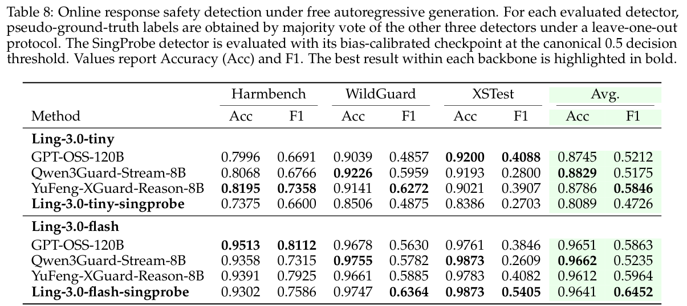
由于自由生成回答的安全标签事先不可得，我们采用留一法评估协议。对于每个被评估的检测器，以其余三个检测器的多数投票作为伪真实标签，确保被评估检测器不参与自身参考标签的生成。随后报告相对于这一留一共识的 Accuracy 和 F1。
如表 8 所示，更强的基座模型显著提升 SingProbe 性能。使用 Ling-3.0-tiny 时，SingProbe 的平均 Accuracy 为 0.8089、平均 F1 为 0.4726，在该留一协议下落后于较强的独立基线。但使用 Ling-3.0-flash 时，SingProbe 取得最强的整体性能，平均 Accuracy 达到 0.9641、平均 F1 达到 0.6452。其平均 F1 比最强基线 YuFeng-XGuard-Reason-8B（0.5964）高 4.88 个百分点，并在 WildGuard（0.6364）和 XSTest（0.5405）上均取得最佳 F1。这些结果证明，SingProbe 的预测在自由自回归生成期间产生，而不是在 teacher forcing 下从固定回答产生时，仍然有效。
需要注意，相对不高的 F1 分数主要来自在线设置中严重的类别不平衡：多数自由生成回答为 Safe，Unsafe 样本相对较少。在正类占比如此低的情况下，即使少量误报或检测器之间的分歧，也会显著降低精确率，进而降低 F1。因此，应结合 Accuracy 解释在线 F1，主要用于相同协议下不同方法的相对比较，而不应直接与类别更平衡的离线基准结果比较。
在线幻觉检测。在线幻觉评估中，模型首先在每个测试集上执行自回归 rollout，生成回答。随后，由 LLM（本实验具体使用 Qwen3.5-397B-A17B）根据问题、模型回答和真实答案，判断每个回答是否正确，生成是否发生幻觉的二元标签。利用这些标签，我们在七个数据集上计算五种方法的幻觉检测 AUC：DRIFT（Bhatnagar et al., 2026）、HaMI（Niu et al., 2025）、SAPLMA-raw、SAPLMA-response（Azaria & Mitchell, 2023）和 SingProbe。七个数据集包括 AA-Omniscience（Jackson et al., 2025）、BBH（Suzgun et al., 2023）、GSM8K（Cobbe et al., 2021）、MATH-500（Hendrycks et al., 2021）、NQ-Open（Lee et al., 2019）、SQuAD（Rajpurkar et al., 2016）和 TruthfulQA（Lin et al., 2022）。结果在 Ling-3.0-tiny 与 Ling-3.0-flash 两种骨干模型上报告。
结果表明，SingProbe 在两种骨干模型上均取得清晰且一致的优势，每种情况下都达到最佳平均 AUC。在 Ling-3.0-tiny 上，其达到 0.6786，比次优方法 DRIFT（0.6316）绝对高出 0.047；在 Ling-3.0-flash 上达到 0.7271，比 DRIFT（0.6546）高 0.073。随着骨干模型能力增强，SingProbe 性能从 0.6786 提升到 0.7271，对次优方法的领先进一步扩大，说明 SingProbe 能更充分地利用更强骨干模型的内部信号。
SingProbe 的优势也体现在单个数据集上。在 Ling-3.0-flash 上，SingProbe 在七个数据集中的五个上排名第一：AA-Omniscience、GSM8K、MATH-500、NQ-Open 和 SQuAD。其中，AUC（接下页）
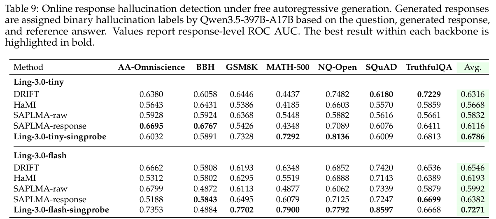
（续上页）在 AA-Omniscience、GSM8K、MATH-500 和 SQuAD 四个数据集上超过 0.73，其中 SQuAD 达到 0.8597。在 Ling-3.0-tiny 上，SingProbe 在 GSM8K、MATH-500、NQ-Open 等知识密集或推理密集任务上也全面领先，分别达到 0.7328、0.7292 和 0.8136。相比之下，基线只在少数单个数据集取得局部最佳结果，并未呈现跨骨干模型的一致优势。虽然 SAPLMA-response 在部分 BBH 和 TruthfulQA 设置下表现较好，但其平均 AUC 在 tiny 上比 SingProbe 低 0.067，在 flash 上低 0.089；HaMI 和 SAPLMA-raw 的差距更大。
除了检测已经出现的不安全内容，内生流式安全护栏还可能揭示回答安全性未来如何演变。我们通过两个相继的研究问题探索这种可能性。首先，SingProbe 能否从当前前缀预测未来生成的安全倾向？其次，如果其分数能够预测未来风险，能否通过在风险分支继续生成之前终止它们，来引导安全 decoding？图 4 总结对应的 rollout 预测与分支剪枝实验。
实验设置。我们使用冻结的 Ling-3.0-flash 作为生成模型，并使用其 SingProbe 预测头作为安全探针。回答不安全性分数通过同一 SGLang 推理服务流水线，直接从 decoding 期间产生的隐藏状态流式输出，无需额外前向传播。对于每个被评估前缀，我们采样八次续写。独立的 YuFeng-XGuard-Reason-8B 评判器为每条完整 rollout 分配二元 Safe 或 Unsafe 标签。需要说明，生成回答的安全性由外部评判器评估，因此未必构成真实标签。尽管如此，观察到的不安全回答率上升或下降，仍能为 SingProbe 对安全性的贡献提供有意义的证据。
SingProbe 能否预测未来生成风险？我们将这个问题具体化为：检验当前安全前缀处的分数，是否与未来续写最终变得不安全的比例相关。具体而言，我们收集 500 个查询—前缀对，其中 350 个样本来自不安全源、150 个来自安全源。每个输入包含一个查询，后接经过标注的安全回答前缀，使我们能在已观察回答仍然安全时，检验 SingProbe 能否预判未来向不安全内容的转变。在尚未采样任何后续内容之前，我们记录 SingProbe 在该安全前缀最后一个 token 处的回答不安全性分数，随后生成八条独立 rollout。评判得到的标签定义该查询—前缀对的经验未来不安全率：\(\widehat{p}_{\mathrm{unsafe}}=n_{\mathrm{unsafe}}/8\)。
图 4a 显示安全前缀分数与随后 rollout 安全性之间存在明确的单调关系。经验不安全率从最低分数区间的约 0.02，上升至最高区间的 0.43，后者约为整体基准率 0.1203 的 3.6 倍，并超过最低分数组不安全率的 21 倍。在较高分数区间，增长尤其明显，依次从 0.08 上升到 0.14、0.16、0.20，最终达到 0.43。由于所有已观察前缀都标为安全，而且分数记录于续写之前，这一趋势不能解释为 SingProbe 只是在对已经出现的有害内容作出反应。
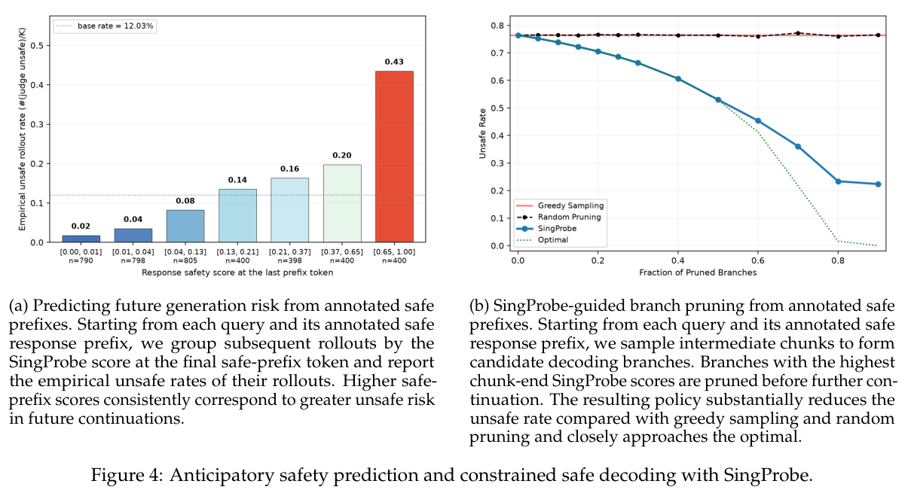
相反，这表明安全前缀处的隐藏状态，包含关于其可能续写的条件安全倾向的信息。
SingProbe 能否引导安全 decoding？受到这一预测关系的启发，我们接着检验该分数能否足够早地识别风险 decoding 分支，以便将其剪除。与第一个实验相同，每个根节点均由查询及其后经过标注的安全回答前缀组成。我们选择 16 个存在冲突的查询—前缀根节点，其最初八条 rollout 中有三到五条不安全，确保每个根节点都存在安全和不安全两种续写。从每个查询和安全前缀出发，我们采样 24 个不同的 64-token 文本块，得到 384 个中间分支前缀。在每个文本块末尾、尚未采样更多 token 时，记录 SingProbe 的回答不安全性分数，再生成八次续写，得到 3,072 条经评判的 rollout。我们移除不安全性分数最高的占比为 \(p\) 的分支，并衡量保留分支续写的不安全率，以模拟受约束 decoding。如图 4b 所示，将这种 SingProbe 引导策略，与在 200 次排列上取平均的随机剪枝，以及移除观测不安全率最高分支的经验风险 oracle 比较。
安全护栏引导的剪枝持续降低保留 rollout 集的不安全率，而随机剪枝后该值几乎不变，约为 0.76。剪除 50% 的分支时，SingProbe 将保留集的不安全率降低到 0.53，相比随机剪枝相对下降约 30%，并基本达到 oracle 的 0.53。随着更多高分分支被移除，不安全率继续下降，在剪除 90% 分支时达到约 0.22。SingProbe 和 oracle 曲线在剪枝比例约 0.5 以前几乎重合，只在激进的剪枝比例下才出现分歧，此时 oracle 降向 0，而 SingProbe 在约 0.22–0.23 处进入平台。这表明，SingProbe 识别最高风险分支十分准确，但对剩余较低风险分支的排序精度较低。总体而言，这些结果说明，SingProbe 的预判信号不仅与未来安全结果相关，还可作为受约束安全 decoding 的实用控制信号。
前述章节介绍了 SingProbe，作为冻结 LLM 在自回归生成期间的轻量级安全护栏。现在，我们研究如何利用这类 token 级内部状态信号，不仅进行检测，还控制生成过程中的干预应在何时修改后续 decoding。
医疗生成提供了一个代表性场景，在这一场景中选择性干预尤为重要。
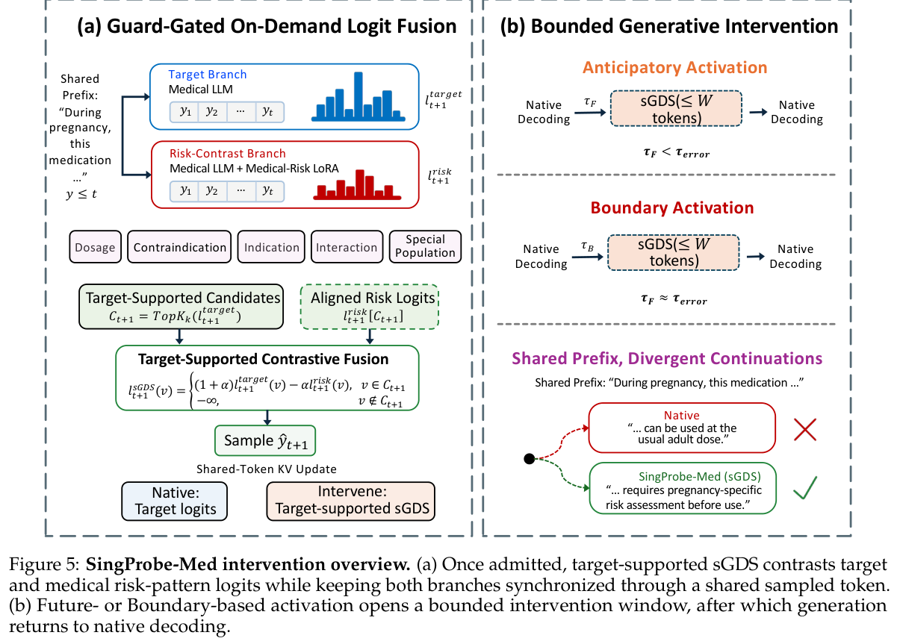
有害建议可能只在一个临床上合理的前缀之后才出现，使查询级筛查不足以应对，而事后审查又来不及阻止错误生成（Draelos et al., 2026; Mishra et al., 2024b; Singhal et al., 2023; Yang et al., 2024）。同时，也不宜在整条回答中始终应用纠正性 decoding 机制：持续开启的引导可能扰动原本正确的医疗内容，并带来持续的 decoding 成本。因此，有效的干预系统应回答两个互补问题：应当何时激活干预，以及需要干预后应如何修改生成？
SingProbe-Med 将这两项职责分开。如图5所示，SingProbe-Med 通过轻量级内部状态信号持续监测不断演变的生成轨迹，负责决定何时干预。一旦满足准入条件，一个名为 support-constrained Guided Decoding Steering（sGDS，支持集约束的引导式 decoding 调控）、由目标模型支持的干预机制，就通过在局部风险后缀上对目标模型的候选 token 进行对比式重排序，决定如何干预。干预持续时间有界，之后生成返回目标模型原生的 decoding。这一设计将低成本的持续监测与成本更高的纠正性 decoding 机制分开，避免对不需要干预的生成持续执行双分支推理。
我们在 AntAngelMed（AntAngelMed Team, 2025）上实例化该框架；它是一个100B参数的 MoE 医疗 LLM。下面分别介绍这两个组件：首先介绍用于决定何时干预的 SingProbe-Med 准入机制，然后介绍用于决定如何干预的目标模型支持式 sGDS。
在 decoding 步骤 \(t\)，SingProbe-Med 从当前前缀 \(y_{\le t}\) 得出四个互补信号。这些信号并非独立预测任务，而是对应干预控制器需要作出的不同决策。四个信号的语义汇总于表10。
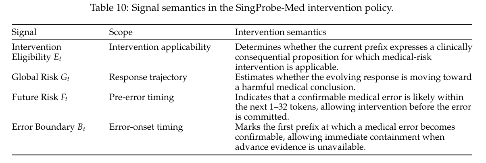
这些信号通过固定的证据层级组合，形成准入策略。对下一个尚未提交 token 的干预按以下规则激活：
该规则遵循 \(E\to G\to(F/B)\) 层级，其动机是错误干预的非对称成本。\(E_t\) 首先将干预限制于适用风险导向调控的前缀。随后，\(G_t\) 提供新出现医疗危害的轨迹级证据。当全局风险信号足够强时，可以直接准入干预，以避免不必要的延迟。当全局证据处于中等水平时，较短预测范围的 \(F_t\) 和 \(B_t\) 信号用于细化干预时机。
需要强调的是，\(F_t\) 和 \(B_t\) 是互补的进入信号，而非先后阶段。\(F_t\) 支持在医疗错误明确出现前进行预判式干预，而 \(B_t\) 在最早能够确认错误的前缀处提供边界级遏制。四个信号并行计算，因此该层级规定的是证据优先级，而非顺序执行流水线。工作阈值和释放条件在最终评估之前，均在开发集划分上固定。
一旦 SingProbe-Med 判断有必要干预，我们就通过显式建模并抑制 decoding 分布中的医疗风险偏好，来引导后续生成。具体而言，我们使用医疗风险 LoRA 适配器（Hu et al., 2022）调整目标模型，构建风险模式分支，并利用目标 logits 与风险模式 logits 的差值指导对比式干预。下面首先定义干预覆盖的医疗风险模式，然后描述相应风险模式分支的构建方式，以及如何将其 logits 纳入目标模型支持式 sGDS。
医疗风险干预范围。我们使用五类可操作的医疗风险类别定义干预范围：剂量与给药错误、特殊人群禁忌证、错误适应证、皮肤科特定错误适应证，以及皮肤科特定特殊人群禁忌证。这些类别用于组织风险模式适配数据，共同构建医疗干预分支的训练集。采样器在五类之间保持近似均衡的覆盖。表11汇总了相应的干预目标。所得风险模式数据集用于适配下文描述的医疗干预分支。
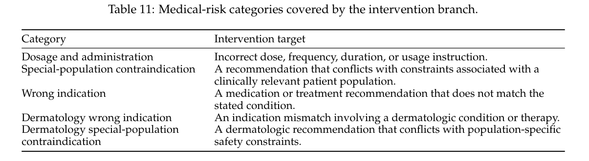
医疗风险模式分支。我们在上述风险模式数据集上，通过 LoRA 模块适配已部署的 AntAngelMed 模型，构建医疗风险模式分支。该适配遵循标准有监督微调形式的目标：给定医疗提示 \(x\) 和风险模式回答 \(y=(y_1,\ldots,y_T)\)，保持基础模型参数 \(\theta\) 冻结，只优化 LoRA 参数 \(\Delta_{\mathrm{risk}}\)。具体而言，该分支以自回归语言建模损失训练：
其中，训练回答来自上述五类医疗风险类别。优化这一目标，会提高适配分支对表现出相应医疗风险模式的续写的似然，从而将这些模式编码到学得的 LoRA 参数中。
适配完成后，原始模型与经风险模式适配的模型形成干预期间使用的两个分支。令 \(f_\theta\) 表示原始 AntAngelMed 模型，\(\Delta_{\mathrm{risk}}\) 表示学得的医疗风险 LoRA 参数。给定实际 decoding 上下文 \(c_t=(x,y_{\le t})\)，它们产生下一个 token 的 logits：
由于适配分支显式地在风险模式续写上训练，它对与所覆盖医疗风险模式一致的 token 和续写给予相对更强的支持。因此，我们将其用作反向专家：\(\ell_{t+1}^{\mathrm{risk}}\) 提供 token 级风险偏好，可在干预时与目标模型 logits 对比，而非将其解释为显式的医疗错误概率，或独立生成的纠正内容。
按需目标模型支持式 sGDS。定义上述医疗风险模式分支后，我们用其下一个 token 的 logits 作为反向专家信号，仅在干预激活时修改目标模型。在每个激活的 decoding 步骤，目标分支和风险模式分支评估相同的实际上下文 \(c_t=(x,y_{\le t})\)，为同一个尚未提交的 token 产生 \(\ell_{t+1}^{\mathrm{tar}}\) 与 \(\ell_{t+1}^{\mathrm{risk}}\)。随后，我们对比这两个分布，同时将干预限制于目标模型本就支持的候选。具体而言，目标分支首先定义允许的候选集：
在该支持集内，sGDS 计算：
所得 \(\ell_{t+1}^{\mathrm{sGDS}}\) 用作最终的下一个 token logits，据此得到采样分布并选出下一个 token。等价地，sGDS 在 \(C_{t+1}\) 内向原生目标 logits 加上对比方向 \(\alpha(\ell_{t+1}^{\mathrm{tar}}-\ell_{t+1}^{\mathrm{risk}})\)。由于风险模式分支经过适配，偏好表现出所覆盖医疗风险模式的续写，受到该分支相对更强支持的候选会被抑制，而受到目标分支更强支持的候选则相对于竞争候选得到提升。top-k限制使目标模型始终作为允许的下一个 token 的来源，因此风险分支只会对合理、受目标模型支持的候选重新排序，而不会引入自身位于支持集之外的续写。
这两个分支作为配对的条件评分器运行，而非各自独立 decoding 的模型。它们从相同提示和实际回答前缀出发，同时维护各自的模型状态和 KV cache。在每个激活步骤，从融合后的 sGDS 分布采样单个 token \(\hat y_{t+1}\)，并将其附加到两个分支。这种共享 token 更新保持前缀同步，确保后续目标 logits 和风险模式 logits 继续描述相同的生成历史。如果两个分支独立 decoding，其前缀便会分叉，所得 logit 差值也就无法再单独反映学得的风险偏好。
当 \(a_{t+1}=0\) 时，生成直接使用未修改的目标模型 logits，风险模式分支不参与 logit 融合。一旦干预激活，就开启一次干预过程：
其中，\(\tau\) 表示激活位置，\(W\) 限制干预持续时间，\(k\) 决定目标模型支持的候选集，\(\alpha\) 控制对比式纠正的强度。我们同时评估完整干预与有界变体。完整干预使用 \(k=50\)、\(\alpha=2\)，直至释放；有界变体使用 \(k=100\)、\(\alpha=3\) 和 \(W=64\)。干预过程释放后，decoding 在已经修改的前缀上恢复仅使用目标模型 logits。
因此，干预在两个层面按需进行。SingProbe-Med 决定何时激活成本更高的双分支 decoding，而目标模型支持式 sGDS 决定激活后应如何修改下一个 token 的分布。通过同时限定激活区间与允许词表，所得干预只在生成中与风险相关的部分抑制学得的医疗风险偏好。
我们沿四个互补的定量维度评估 SingProbe-Med：准入选择性与时机、医疗错误纠正、通用能力保持，以及推理效率。我们还提供一个定性案例研究，说明所得干预如何修改代表性的医疗风险续写。所有准入阈值与干预过程释放条件均在开发集划分上选择，并在留出医疗集评估之前冻结。不在测试集上重新选择任何阈值，也不为单独的能力基准另外选择阈值。
我们首先评估准入机制能否识别需要干预的轨迹，并足够早地触发。“Harm”表示包含目标医疗风险的轨迹，“White”表示不应触发干预的轨迹。令 \(A_i\) 指示轨迹 \(i\) 是否开启至少一次干预过程。在固定工作点，我们报告：
我们还根据留出集上完整的轨迹级排序报告 ROC–AUC、平均精确率（AP）与 PR–AUC。对于 White FPR 工作点 \(q\in\{10\%,5\%,1\%\}\)，阈值在开发集上选择，并在留出集上评估 Harm 召回率和精确率之前冻结。
对于组合检测器，干预适用性作为全局风险分数的二元门控。具体而言，我们将门控风险分数定义为：
其中，\(\gamma_E\) 是干预适用性阈值，\(\sigma(\cdot)\) 表示 sigmoid 函数。因此，只有相应前缀被认为适用医疗风险干预时，全局风险才会对排序产生贡献。
表12比较了单独的全局风险与这种由适用性门控的全局风险分数。应用干预适用性门控后，ROC–AUC、AP 和 PR–AUC 分别提高0.025、0.012和0.011，表明在不适用干预的前缀上抑制风险分数，可以改善轨迹选择。将允许的 White FPR 从10%收紧至1%，精确率会从92.34%提高至96.77%，而 Harm 召回率则从51.70%降至11.98%，揭示了干预覆盖率与误触发控制之间的直接权衡。
我们进一步在具有可确认医疗错误边界的 Harm 轨迹上评估激活时机。令 \(T_{\mathrm{confirm}}\) 表示医疗错误首次变得可确认的前缀。在 Harm 轨迹中，（接下页）
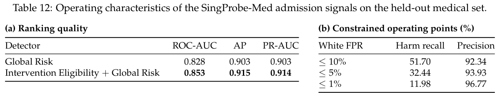
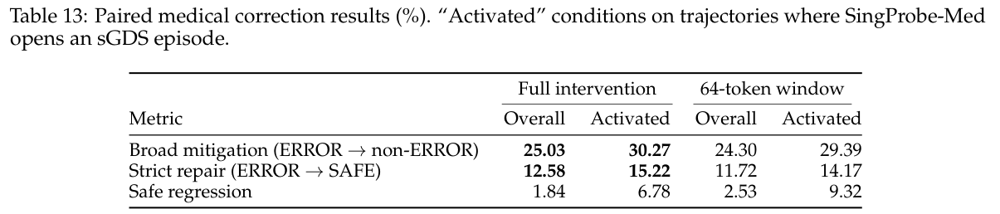
（接上页）
54.99%的首次激活发生在 \(T_{\mathrm{confirm}}\) 或之前，意味着对于超过一半的风险轨迹，该策略不晚于可确认错误边界开启纠正窗口。在3,044,056个 token 状态上评估全部四个 SingProbe-Med 信号耗时0.019749毫秒/token，相当于每秒约50,635个 token 状态。
接下来，我们评估获准进行的干预是否纠正最终医疗结果。每个测试案例都按提示在仅目标模型 decoding 与某个干预配置之间配对。令 \(z_i^0\) 和 \(z_i^m\) 分别表示基线回答与干预后回答在 \(\{\mathrm{ERROR},\mathrm{SAFE},\mathrm{UNCERTAIN}\}\) 中的三类裁定结果。我们将广义缓解定义为基线 ERROR 变为 SAFE 或 UNCERTAIN，将严格修复定义为 ERROR → SAFE，将安全退化定义为基线 SAFE 变为非 SAFE 结果。“Overall”报告完整测试集中相应基线群体上的这些转移，“Activated”则额外限定为至少开启一次 sGDS 干预过程的轨迹。我们比较两种干预配置。完整干预使用 \(k=50\) 和 \(\alpha=2\)，直至释放；有界配置使用 \(k=100\)、\(\alpha=3\)，最大干预窗口为 \(W=64\) 个 token。
表13报告了配对纠正结果。完整干预在完整测试集上缓解了25.03%的基线错误生成，其中12.58%从 ERROR 严格修复为 SAFE。在实际激活干预的轨迹上，广义缓解和严格修复分别提高至30.27%和15.22%，表明准入机制将干预集中于纠正潜力更大的轨迹。将干预限制为64-token窗口，仍保留了这一收益的大部分。有界配置在整体上达到24.30%的广义缓解与11.72%的严格修复，分别保留了相应完整干预结果的97.1%和93.2%。这表明，大部分有用的纠正发生在激活后的早期后缀中，并不需要持续的双分支 decoding。
不过，干预仍会带来修改原本安全生成的非零风险。报告的安全退化率在完整干预下整体为1.84%，在64-token配置下为2.53%；若专门限定到激活轨迹，比例更高。这一权衡进一步说明应当选择性准入，而非不加区分地应用 sGDS。
我们接下来考察，对于不需要医疗风险调控的输入，选择性干预是否扰动模型能力。我们在 AIME24/25（Maxwell-Jia, 2024; Zhang & Math-AI Team, 2025）、HealthBench（Arora et al., 2025）、CFBench（Zhang et al., 2025）、Arena-Hard-v2（Li et al., 2025a）、AlignBench（Liu et al., 2024）和 WritingBench（Wu et al., 2026）上，比较原生 AntAngelMed-100B、始终开启的 sGDS 与 SingProbe-Med。评估遵循各基准原生的评分约定：AIME24/25 对2024年和2025年分数取平均，CFBench 报告 CSR/ISR/PSR，其余基准保留原生量表。对于基于干预的方法，激活率定义为至少开启一次 sGDS 干预过程的基准样例百分比。
如表14所示，SingProbe-Med 只在4.69%的 HealthBench 样例上激活，在所报告的（接下页）
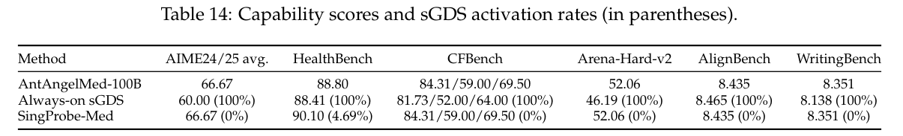
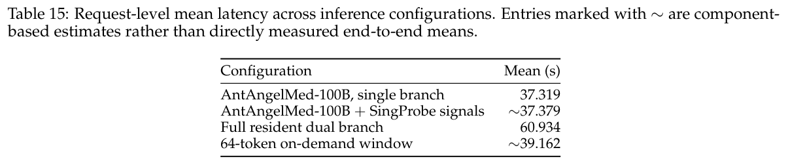
（接上页）
AIME24/25、CFBench、Arena-Hard-v2、AlignBench 和 WritingBench 样例上均未激活。在这些评估中，其能力分数整体上与原生 AntAngelMed-100B 相当。相比之下，始终开启的 sGDS 会修改每个样例，在全部六个基准上的分数都低于 SingProbe-Med，其中 AIME24/25 与 Arena-Hard-v2 的退化尤为明显。
最后，我们评估按需干预能否降低双分支 decoding 的推理成本。我们比较四种 AntAngelMed-100B 推理配置：原生单分支 decoding、带持续 SingProbe-Med 监测的单分支 decoding、完全常驻的双分支配置，以及有界的64-token干预窗口。单分支与常驻双分支条目是参考测量值。目标模型加 SingProbe-Med 与64-token条目，则是根据测得的单分支延迟，以及相应的额外信号成本或激活窗口成本，按组件估算得到，因此在表15中标注为∼。
持续的 SingProbe-Med 评分估计会在37.319秒单分支参考值之外增加0.060秒，因此在不计干预成本时约为37.379秒。在整个生成过程中维持完整双分支，会使请求级平均延迟增加至60.934秒，比原生 decoding 多23.615秒。相比之下，64-token干预窗口估计引入1.843秒的激活窗口成本，加到单分支参考值后约为39.162秒。这些结果表明，将 sGDS 限制于获准干预的后缀，可以把持续的双分支计算转化为有限的干预成本。结合上述纠正结果，它们说明，无需在整个生成过程中持续执行第二分支，也能够保留完整干预的大部分安全收益。
本研究介绍了 SingProbe：一种内生安全护栏，直接利用基础 LLM 产生的隐藏状态，在整个生成过程中联合监测查询意图、回答安全性和幻觉风险。通过复用 decoding 期间已经计算的表示，SingProbe 避免了冗余文本编码，并以显著低于独立安全护栏模型的部署复杂度实现细粒度流式检测。我们还提出了 SingStreamBench，用于评估流式安全检测器的时间行为，尤其是它们在良性前缀上保持静默、识别不安全内容起点的能力。在广泛的离线与在线评估中，SingProbe 在安全和幻觉检测上取得强大性能，同时维持极低的误报率。
更重要的是，结果表明，内生安全护栏的价值不止于被动分类。SingProbe 分数包含未来续写安全倾向的信息，因此能够作为受约束 decoding 的控制信号。SingProbe-Med 进一步展示了，在高风险领域，这类内部状态信号如何支持选择性的按需干预，仅在有必要干预的时间和位置修改生成。总体而言，SingProbe 在 LLM 的内部表示与生成时安全机制之间提供了轻量级接口，为同时提高监测粒度、计算效率和可执行运行时控制的安全护栏提供了一条路径。
Shiwen Cui，Jianjie Jiang，Guoyi Li，Jinzhen Lin，Changhua Meng，Shuo Shao，Jiashui Wang，Weiqiang Wang，Weixi Wu，Zhuoer Xu，Zihan Yan，Shenglin Yin，Xinlei Ying，Zhe Zhao，Jing Zhou。
（所有作者按姓氏字母顺序排列。）
Shuo Shao、Zhuoer Xu 和 Zihan Yan 负责 SingProbe 的安全部分，Jianjie Jiang、Weixi Wu、Shenglin Yin、Xinlei Ying 和 Zhe Zhao 负责幻觉部分。Jinzhen Lin 开发了支撑基础设施。Guoyi Li 和 Jing Zhou 开发了 SingProbe-med。Shiwen Cui、Changhua Meng、Jiashui Wang 和 Weiqiang Wang 指导了本项目。
Sandhini Agarwal, Lama Ahmad, Jason Ai, Sam Altman, Andy Applebaum, Edwin Arbus, Rahul K Arora, Yu Bai, Bowen Baker, Haiming Bao, et al. gpt-oss-120b 与 gpt-oss-20b 模型卡. arXiv preprint arXiv:2508.10925, 2025.
AntAngelMed Team. AntAngelMed：通过 MoE 实现高效临床推理的高性能医疗语言模型, 2025. URL https://huggingface.co/MedAIBase/AntAngelMed.
Rahul K Arora, Jason Wei, Rebecca Soskin Hicks, Preston Bowman, Joaquin Quiñonero-Candela, Foivos Tsimpourlas, Michael Sharman, Meghan Shah, Andrea Vallone, Alex Beutel, et al. HealthBench：评估大语言模型，推动人类健康改善. arXiv preprint arXiv:2505.08775, 2025.
Jacob Austin, Augustus Odena, Maxwell Nye, Maarten Bosma, Henryk Michalewski, David Dohan, Ellen Jiang, Carrie Cai, Michael Terry, Quoc Le, et al. 使用大语言模型进行程序合成. arXiv preprint arXiv:2108.07732, 2021.
Amos Azaria and Tom Mitchell. LLM 的内部状态知道它何时在说谎. In Findings of the Association for Computational Linguistics: EMNLP 2023, pp. 967–976, 2023.
Rohan Bhatnagar, Youran Sun, Chi Andrew Zhang, Yixin Wen, and Haizhao Yang. DRIFT：通过检测表示不一致性判断事实真实性. arXiv preprint arXiv:2601.14210, 2026.
Aili Chen et al. MiniMax-M2 系列：以微小激活释放最大的现实世界智能. arXiv preprint arXiv:2605.26494, 2026. doi: 10.48550/arXiv.2605.26494. URL https://arxiv.org/abs/2605.26494.
Xiang Chen, Duanzheng Song, Honghao Gui, Chenxi Wang, Ningyu Zhang, Yong Jiang, Fei Huang, Chengfei Lv, Dan Zhang, and Huajun Chen. FactCHD：事实冲突型幻觉检测基准. arXiv preprint arXiv:2310.12086, 2023.
Minseok Choi, Dongjin Kim, Seungbin Yang, Subin Kim, Youngjun Kwak, Juyoung Oh, Jaegul Choo, and Jungmin Son. ExpGuard：专业领域中的 LLM 内容审核. In International Conference on Learning Representations, 2026.
Karl Cobbe, Vineet Kosaraju, Mohammad Bavarian, Mark Chen, Heewoo Jun, Lukasz Kaiser, Matthias Plappert, Jerry Tworek, Jacob Hilton, Reiichiro Nakano, Christopher Hesse, and John Schulman. 训练验证器以解决数学文字题. arXiv preprint arXiv:2110.14168, 2021.
Mike Conover, Matt Hayes, Ankit Mathur, Jianwei Xie, Jun Wan, Sam Shah, Ali Ghodsi, Patrick Wendell, Matei Zaharia, and Reynold Xin. Free Dolly：介绍世界上首个真正开放的指令微调 LLM, 2023. URL https://www.databricks.com/blog/2023/04/12/dolly-first-open-commercially-viable-instruction-tuned-llm.
Hoagy Cunningham, Jerry Wei, Zihan Wang, Andrew Persic, Alwin Peng, Jordan Abderrachid, Raj Agarwal, Bobby Chen, Austin Cohen, Andy Dau, et al. Constitutional Classifiers++：针对通用越狱的高效生产级防御. arXiv preprint arXiv:2601.04603, 2026.
Rachel L. Draelos, Samina Afreen, Barbara Blasko, Tiffany L. Brazile, Natasha Chase, Dimple Patel Desai, Jessica Evert, Heather L. Gardner, Lauren Herrmann, Aswathy Vaikom House, Stephanie Kass, Marianne Kavan, Kirshma Khemani, Amanda Koire, Lauren M. McDonald, Zahraa Rabeeah, and Amy Shah. 大语言模型对患者提出的医疗问题给出不安全回答. npj Digital Medicine, 9(1):241, 2026. doi: 10.1038/s41746-026-02428-5. URL https://www.nature.com/articles/s41746-026-02428-5.
Nouha Dziri, Ehsan Kamalloo, Sivan Milton, Osmar R Zaïane, Mo Yu, Edoardo M Ponti, and Siva Reddy. FaithDial：面向信息寻求对话的忠实性基准. Transactions of the Association for Computational Linguistics, 10:1473–1490, 2022.
Shaona Ghosh, Prasoon Varshney, Makesh Narsimhan Sreedhar, Aishwarya Padmakumar, Traian Rebedea, Jibin Rajan Varghese, and Christopher Parisien. AEGIS2.0：用于 LLM 安全护栏对齐的多样化 AI 安全数据集与风险分类体系. In Luis Chiruzzo, Alan Ritter, and Lu Wang (eds.), Proceedings of the 2025 Conference of the Nations of the Americas Chapter of the Association for Computational Linguistics: Human Language Technologies, pp. 5992–6026, Albuquerque, New Mexico, April 2025. Association for Computational Linguistics. ISBN 979-8-89176-189-6. doi: 10.18653/v1/2025.naacl-long.306. URL https://aclanthology.org/2025.naacl-long.306/.
Google. Gemini 3. https://blog.google/products-and-platforms/products/gemini/gemini-3/, 2025.
Aaron Grattafiori, Abhimanyu Dubey, Abhinav Jauhri, Abhinav Pandey, Abhishek Kadian, Ahmad Al-Dahle, Aiesha Letman, Akhil Mathur, Alan Schelten, Alex Vaughan, et al. Llama 3 模型家族. arXiv preprint arXiv:2407.21783, 2024.
Ant Group. SingGuard：具有动态推理能力、适应策略的多模态 LLM 安全护栏. arXiv preprint arXiv:2606.22873, 2026.
Seungju Han, Kavel Rao, Allyson Ettinger, Liwei Jiang, Bill Yuchen Lin, Nathan Lambert, Yejin Choi, and Nouha Dziri. WildGuard：面向 LLM 安全风险、越狱与拒答的开放式一站式审核工具. Advances in neural information processing systems, 37:8093–8131, 2024.
Dan Hendrycks, Collin Burns, Saurav Kadavath, Akul Arora, Steven Basart, Eric Tang, Dawn Song, and Jacob Steinhardt. 使用 MATH 数据集衡量数学问题求解能力. NeurIPS, 2021.
Edward J. Hu, Yelong Shen, Phillip Wallis, Zeyuan Allen-Zhu, Yuanzhi Li, Shean Wang, Lu Wang, and Weizhu Chen. LoRA：大语言模型的低秩适配. In International Conference on Learning Representations, 2022.
Hakan Inan, Kartikeya Upasani, Jianfeng Chi, Rashi Rungta, Krithika Iyer, Yuning Mao, Michael Tontchev, Qing Hu, Brian Fuller, Davide Testuggine, et al. Llama Guard：基于 LLM 的人机对话输入输出防护. arXiv preprint arXiv:2312.06674, 2023.
Declan Jackson, William Keating, George Cameron, and Micah Hill-Smith. AA-Omniscience：评估大语言模型的跨领域知识可靠性. arXiv preprint arXiv:2511.13029, 2025.
Jiaming Ji, Mickel Liu, Josef Dai, Xuehai Pan, Chi Zhang, Ce Bian, Boyuan Chen, Ruiyang Sun, Yizhou Wang, and Yaodong Yang. BeaverTails：通过人类偏好数据集改进 LLM 安全对齐. Advances in Neural Information Processing Systems, 36:24678–24704, 2023.
Jiaming Ji, Donghai Hong, Borong Zhang, Boyuan Chen, Josef Dai, Boren Zheng, Tianyi Qiu, Boxun Li, and Yaodong Yang. PKU-SafeRLHF：通过人类偏好实现 LLM 的多层次安全对齐. arXiv preprint arXiv:2406.15513, 2024.
Woosuk Kwon, Zhuohan Li, Siyuan Zhuang, Ying Sheng, Lianmin Zheng, Cody Hao Yu, Joseph Gonzalez, Hao Zhang, and Ion Stoica. 通过 PagedAttention 为大语言模型服务实现高效内存管理. In Proceedings of the 29th symposium on operating systems principles, pp. 611–626, 2023.
Kenton Lee, Ming-Wei Chang, and Kristina Toutanova. 弱监督开放域问答的潜在检索. In Proceedings of the 57th annual meeting of the association for computational linguistics, pp. 6086–6096, 2019.
Tianle Li, Wei-Lin Chiang, Evan Frick, Lisa Dunlap, Tianhao Wu, Banghua Zhu, Joseph E. Gonzalez, and Ion Stoica. 从众包数据到高质量基准：Arena-Hard 与 BenchBuilder 流水线. In Proceedings of the 42nd International Conference on Machine Learning, volume 267 of Proceedings of Machine Learning Research, pp. 34209–34231. PMLR, 2025a.
Xiaodan Li, Mengjie Wu, Yao Zhu, Yunna Lv, YueFeng Chen, Cen Chen, Jianmei Guo, and Hui Xue. KELP：通过潜在动态引导风险检测实现的大模型流式防护. arXiv preprint arXiv:2510.09694, 2025b.
Yang Li, Qiang Sheng, Yehan Yang, Xueyao Zhang, and Juan Cao. 从判断到干预：通过流式内容监测提前停止 LLM 有害输出. Advances in Neural Information Processing Systems, 38:54305–54333, 2025c.
Junyu Lin, Meizhen Liu, Xiufeng Huang, Jinfeng Li, Haiwen Hong, Xiaohan Yuan, Yuefeng Chen, Longtao Huang, Hui Xue, Ranjie Duan, et al. Yufeng-XGuard：以推理为中心、可解释且灵活的大语言模型安全护栏模型. arXiv preprint arXiv:2601.15588, 2026.
Stephanie Lin, Jacob Hilton, and Owain Evans. TruthfulQA：衡量模型如何模仿人类谬误. In Proceedings of the 60th annual meeting of the association for computational linguistics (volume 1: long papers), pp. 3214–3252, 2022.
Xiao Liu, Xuanyu Lei, Shengyuan Wang, Yue Huang, Andrew Feng, Bosi Wen, Jiale Cheng, Pei Ke, Yifan Xu, Weng Lam Tam, et al. AlignBench：大语言模型中文对齐基准评估. In Annual Meeting of the Association for Computational Linguistics, pp. 11621–11640, 2024.
Potsawee Manakul, Adian Liusie, and Mark Gales. SelfCheckGPT：面向生成式大语言模型的零资源黑盒幻觉检测. In Proceedings of the 2023 conference on empirical methods in natural language processing, pp. 9004–9017, 2023.
Todor Markov, Chong Zhang, Sandhini Agarwal, Florentine Eloundou Nekoul, Theodore Lee, Steven Adler, Angela Jiang, and Lilian Weng. 现实世界中不良内容检测的整体方法. In Proceedings of the AAAI conference on artificial intelligence, volume 37, pp. 15009–15018, 2023.
Maxwell-Jia. AIME 2024 数据集. Hugging Face Dataset, 2024. URL https://huggingface.co/datasets/Maxwell-Jia/AIME_2024.
Mantas Mazeika, Long Phan, Xuwang Yin, Andy Zou, Zifan Wang, Norman Mu, Elham Sakhaee, Nathaniel Li, Steven Basart, Bo Li, et al. HarmBench：自动化红队测试与稳健拒答的标准化评估框架. In International Conference on Machine Learning, 2024.
Timothee Mickus, Elaine Zosa, Raúl Vázquez, Teemu Vahtola, Jörg Tiedemann, Vincent Segonne, Alessandro Raganato, and Marianna Apidianaki. SemEval-2024 任务6：SHROOM，关于幻觉及相关可观测过度生成错误的共享任务. In Proceedings of the 18th International Workshop on Semantic Evaluation, pp. 1979–1993, 2024.
Todor Mihaylov, Peter Clark, Tushar Khot, and Ashish Sabharwal. 一套盔甲能够导电吗？一个新的开卷问答数据集. In EMNLP, 2018.
Abhika Mishra, Akari Asai, Vidhisha Balachandran, Yizhong Wang, Graham Neubig, Yulia Tsvetkov, and Hannaneh Hajishirzi. 语言模型的细粒度幻觉检测与编辑. arXiv preprint arXiv:2401.06855, 2024a.
Abhika Mishra, Akari Asai, Vidhisha Balachandran, Yizhong Wang, Graham Neubig, Yulia Tsvetkov, and Hannaneh Hajishirzi. 语言模型的细粒度幻觉检测与编辑. arXiv preprint arXiv:2401.06855, 2024b.
Moonshot AI. Kimi K2.6. https://huggingface.co/moonshotai/Kimi-K2.6, 2026. Hugging Face model repository.
Cheng Niu, Yuanhao Wu, Juno Zhu, Siliang Xu, Kashun Shum, Randy Zhong, Juntong Song, and Tong Zhang. RAGTruth：用于开发可信检索增强语言模型的幻觉语料库. In Proceedings of the 62nd Annual Meeting of the Association for Computational Linguistics, pp. 10862–10878, 2024.
Mengjia Niu, Hamed Haddadi, and Guansong Pang. 通过自适应 token 选择实现稳健的 LLM 幻觉检测. Advances in Neural Information Processing Systems, 38:126355–126377, 2025.
OpenAI. GPT-5. https://openai.com/index/gpt-5-1/, 2025.
Qwen Team. Qwen3.5：迈向原生多模态 agent, February 2026a. URL https://qwen.ai/blog?id=qwen3.5.
Qwen Team. Qwen3.6-27B：在27B稠密模型中实现旗舰级编程能力, April 2026b. URL https://qwen.ai/blog?id=qwen3.6-27b.
Qwen Team. Qwen3.6-35B-A3B：agent 编程能力现已向所有人开放, April 2026c. URL https://qwen.ai/blog?id=qwen3.6-35b-a3b.
Pranav Rajpurkar, Jian Zhang, Konstantin Lopyrev, and Percy Liang. SQuAD：用于机器文本理解的10万余个问题. In Proceedings of the 2016 conference on empirical methods in natural language processing, pp. 2383–2392, 2016.
IBM Research. Granite Guardian. Technical Report, 2024.
Paul Röttger, Hannah Rose Kirk, Bertie Vidgen, Giuseppe Attanasio, Federico Bianchi, and Dirk Hovy. XSTest：识别大语言模型过度安全行为的测试套件. arXiv preprint arXiv:2308.01263, 2023.
Karan Singhal, Shekoofeh Azizi, Tao Tu, S. Sara Mahdavi, Jason Wei, Hyung Won Chung, Nathan Scales, Ajay Tanwani, Heather Cole-Lewis, Stephen Pfohl, et al. 大语言模型编码了临床知识. Nature, 620(7972):172–180, 2023. doi: 10.1038/s41586-023-06291-2.
StepFun Team. Step-3.7-Flash. Hugging Face model repository, 2026. URL https://huggingface.co/stepfun-ai/Step-3.7-Flash. 访问日期：2026年9月8日。
Mirac Suzgun, Nathan Scales, Nathanael Schärli, Sebastian Gehrmann, Yi Tay, Hyung Won Chung, Aakanksha Chowdhery, Quoc Le, Ed H Chi, Denny Zhou, et al. 具有挑战性的 BIG-Bench 任务，以及 chain-of-thought 能否解决它们. In Findings of the Association for Computational Linguistics: ACL 2023, pp. 13003–13051, 2023.
Gemma Team, Sherif El Abd, Vaibhav Aggarwal, Robin Algayres, Alek Andreev, Olivier Bachem, Ian Ballantyne, Cormac Brick, Victor C˘arbune, Michelle Casbon, et al. Gemma 4 技术报告. arXiv preprint arXiv:2607.02770, 2026.
Tencent Hy Team. Hy3. Hugging Face model repository, 2026. URL https://huggingface.co/tencent/Hy3. 访问日期：2026年9月8日。
Yuning Wu, Jiahao Mei, Ming Yan, Chenliang Li, Shaopeng Lai, Yuran Ren, Zijia Wang, Ji Zhang, Mengyue Wu, Qin Jin, et al. WritingBench：生成式写作的综合基准. Advances in Neural Information Processing Systems, 38, 2026.
Anyi Xu, Bangcai Lin, Bing Xue, Bingxuan Wang, Bingzheng Xu, Bochao Wu, Bowei Zhang, Chaofan Lin, Chen Dong, Chenchen Ling, et al. DeepSeek-V4：迈向高效的百万 token 上下文智能. arXiv preprint arXiv:2606.19348, 2026.
An Yang, Anfeng Li, Baosong Yang, Beichen Zhang, Binyuan Hui, Bo Zheng, Bowen Yu, Chang Gao, Chengen Huang, Chenxu Lv, et al. Qwen3 技术报告. arXiv preprint arXiv:2505.09388, 2025.
Yifan Yang, Qiao Jin, Robert Leaman, Xiaoyu Liu, Guangzhi Xiong, Maame Sarfo-Gyamfi, Changlin Gong, Santiago Ferrière-Steinert, W. John Wilbur, Xiaojun Li, Jiaxin Yuan, Bang An, Kelvin S. Castro, et al. 确保安全与信任：分析大语言模型在医学中的风险. arXiv preprint arXiv:2411.14487, 2024. doi: 10.48550/arXiv.2411.14487.
Aohan Zeng, Xin Lv, Zhenyu Hou, Zhengxiao Du, Qinkai Zheng, Bin Chen, Da Yin, Chendi Ge, Chenghua Huang, Chengxing Xie, et al. GLM-5：从 vibe coding 到 agent 工程. arXiv preprint arXiv:2602.15763, 2026.
Wenjun Zeng et al. ShieldGemma：基于 Gemma 的生成式 AI 内容审核. arXiv preprint arXiv:2407.21772, 2024.
Tao Zhang, Chenglin Zhu, Yanjun Shen, Wenjing Luo, Yan Zhang, Hao Liang, Fan Yang, Mingan Lin, Yujing Qiao, Weipeng Chen, et al. CFBench：LLM 约束遵循能力的综合基准. In Annual Meeting of the Association for Computational Linguistics, pp. 32926–32944, 2025.
Yifan Zhang and Math-AI Team. 美国数学邀请赛（AIME）2025, 2025. URL https://huggingface.co/datasets/math-ai/aime25.
Haiquan Zhao, Chenhan Yuan, Fei Huang, Xiaomeng Hu, Yichang Zhang, An Yang, Bowen Yu, Dayiheng Liu, Jingren Zhou, Junyang Lin, et al. Qwen3Guard 技术报告. arXiv preprint arXiv:2510.14276, 2025.
Lianmin Zheng, Liangsheng Yin, Zhiqiang Xie, Chuyue Sun, Jeff Huang, Cody Hao Yu, Shiyi Cao, Christos Kozyrakis, Ion Stoica, Joseph E. Gonzalez, Clark W. Barrett, and Ying Sheng. SGLang：高效执行结构化语言模型程序. In Advances in Neural Information Processing Systems 37, 2024.
我们通过将 SingProbe 适配到一系列广泛的主流开源基础模型，扩展其可用范围。适配模型包括 Qwen3（Yang et al., 2025）、Qwen3.5（Qwen Team, 2026a）、Qwen3.6（Qwen Team, 2026b;c）与 Qwen3.8 系列；Llama 3（Grattafiori et al., 2024）系列；Gemma 4（Team et al., 2026）系列；Ling 3.0 系列；gpt-oss（Agarwal et al., 2025）系列；GLM（Zeng et al., 2026）系列；以及 StepFun（StepFun Team, 2026）、MiniMax（Chen et al., 2026）、DeepSeek（Xu et al., 2026）和 Hy（Tencent Hy Team, 2026）家族的代表模型。这项工作使同一 SingProbe 接口可用于常用的模型家族、参数规模和架构。
表16列出了已适配的基础模型及相应的 SingProbe 仓库。每个 probe 都应与表中所列的配对基础模型仓库搭配使用。
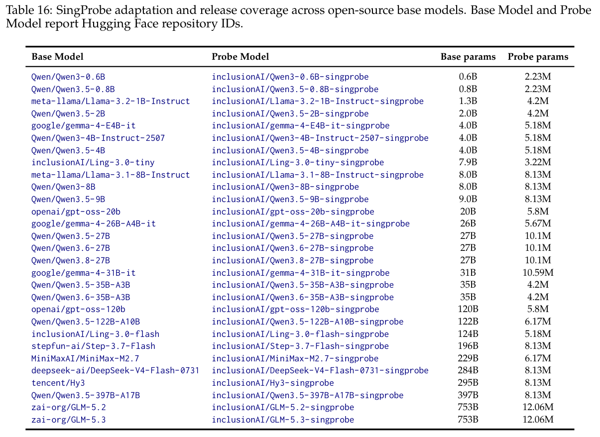
我们使用与正文相同的基准套件评估适配后的 probe。表17汇总主要指标，随后给出查询分类、回答安全性和回答幻觉的详细结果。
在这些适配发布中，查询 F1 的范围为0.8334–0.8811，回答安全性 F1 为0.8334–0.8729，回答级流式 AUC 为0.9740–0.9905，token 级流式 AUC 为0.9175–0.9508。29个模型中的27个，其合并良性误报率均保持在0.08%或以下。
表18报告各基准的查询意图 F1。DeepSeek-V4-Flash-0731-singprobe 取得最高的宏平均 F1（0.8811），而 Llama-3.1-8B-Instruct-singprobe、Qwen3.5-35B-A3B-singprobe 和 Qwen3.5-（接下页）
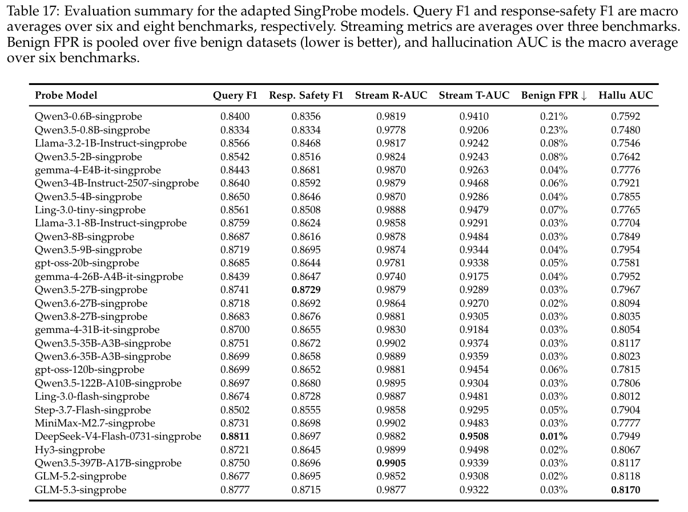
（接上页）
397B-A17B-singprobe 也超过0.8750。结果并不随参数量单调增加：若干紧凑模型仍具有竞争力，包括 Qwen3-4B-Instruct-2507-singprobe（0.8640）和 Qwen3.5-4B-singprobe（0.8650）。OpenAI Moderation 划分通常最具挑战性，而 XSTest 与 HarmBench 始终具有较高 F1。
回答级分类。表19给出回答不安全性 F1 结果。Qwen3.5-27B-singprobe 获得最高的宏平均 F1（0.8729），Ling-3.0-flash-singprobe 紧随其后（0.8728）。许多模型之间的差距很小，尤其是参数量高于4B的模型，说明轻量级 probe 能够在不同基础模型家族间提取一致的回答安全信号。没有任何单一基础模型在每个数据集上都占据优势，这也凸显了在异构安全分布上评估的重要性。
流式安全检测。表20以与正文流式评估相同的格式报告回答级与 token 级流式 AUC。回答级判别能力普遍很强，每个模型的平均 AUC 都至少达到0.9740。Qwen3.5-397B-A17B-singprobe 的平均回答级 AUC 最高（0.9905）。对于要求更高的 token 定位指标，DeepSeek-V4-Flash-0731-singprobe 表现最好（0.9508），随后是 Hy3-singprobe（0.9498）、Qwen3-8B-singprobe（0.9484）、MiniMax-M2.7-singprobe（0.9483）和 Ling-3.0-flash-singprobe（0.9481）。
良性回答上的误报。表21报告良性模型生成上的误报率。几乎所有 probe 都很少误报，误报主要集中在 Dolly-15k。DeepSeek-V4-Flash-0731-singprobe 的合并 FPR 最低（0.01%）；Qwen3.6-27B-singprobe 与 Hy3-singprobe 次之，均为0.02%。
表22报告幻觉检测 AUC。GLM-5.3-singprobe 取得所展示结果中最高的宏平均 AUC（0.8170），其次是 GLM-5.2-singprobe（0.8118）、Qwen3.5-35B-A3B-singprobe 和 Qwen3.5-397B-A17B-（接下页）
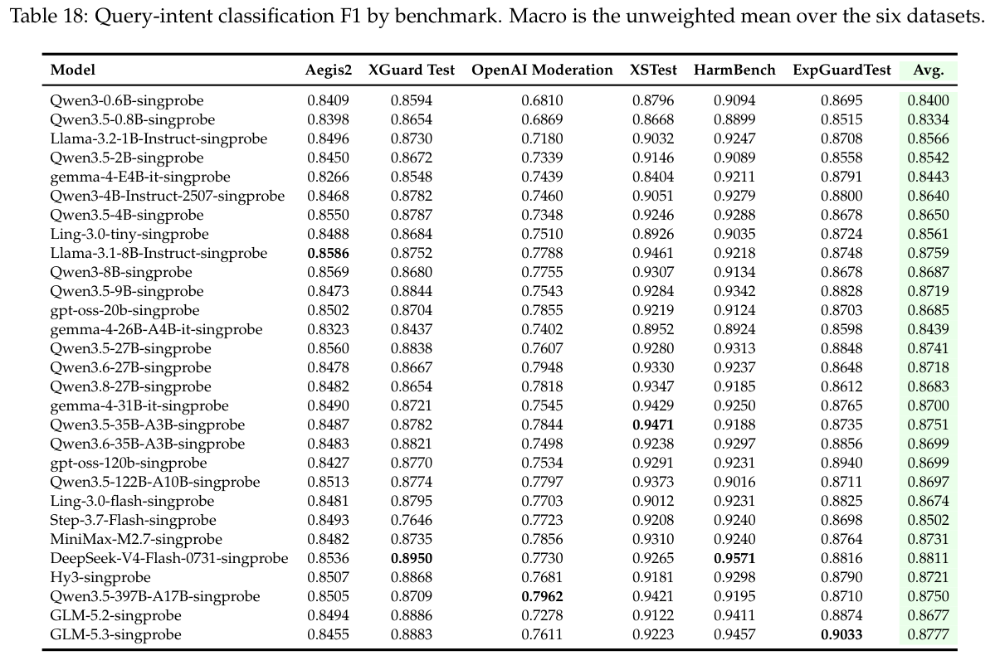
（接上页）
singprobe（两者均为0.8117），以及 Qwen3.6-27B-singprobe（0.8094）。FaithDial 始终具有较高 AUC，而 FAVA 通常是最具挑战性的基准。
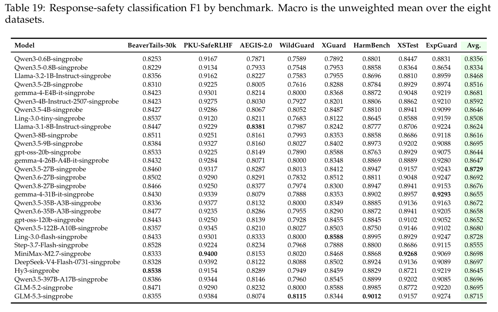
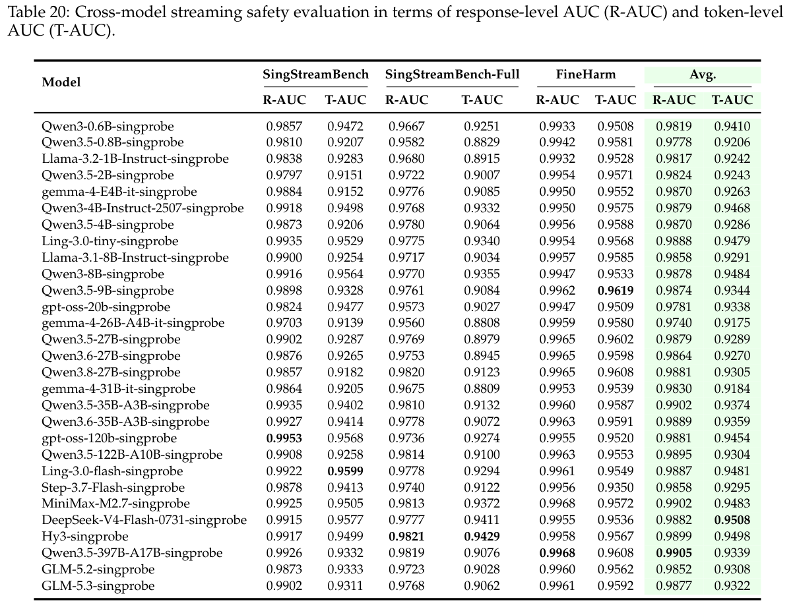
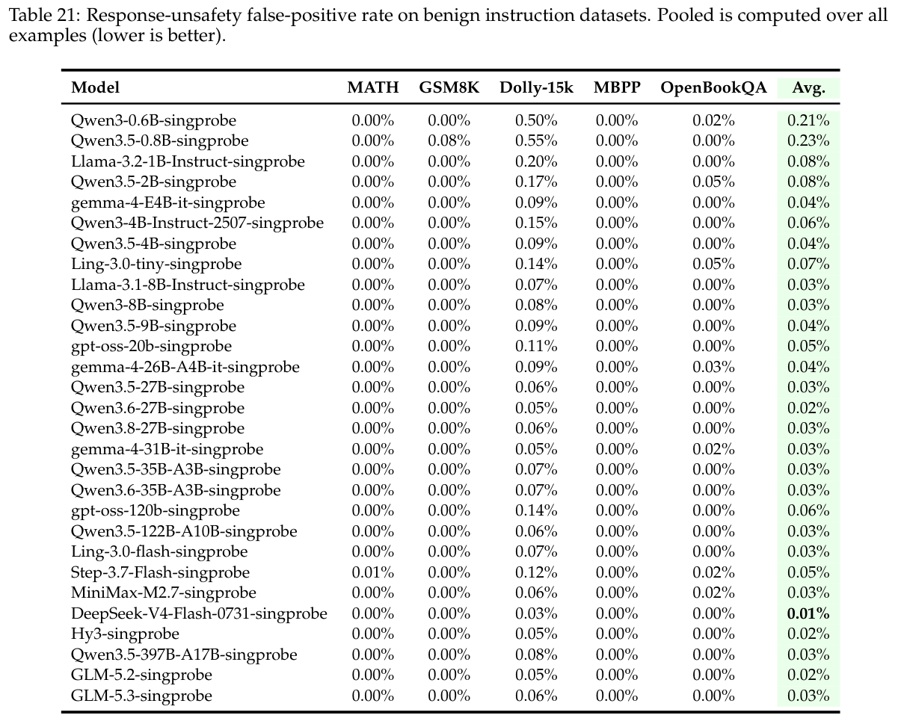
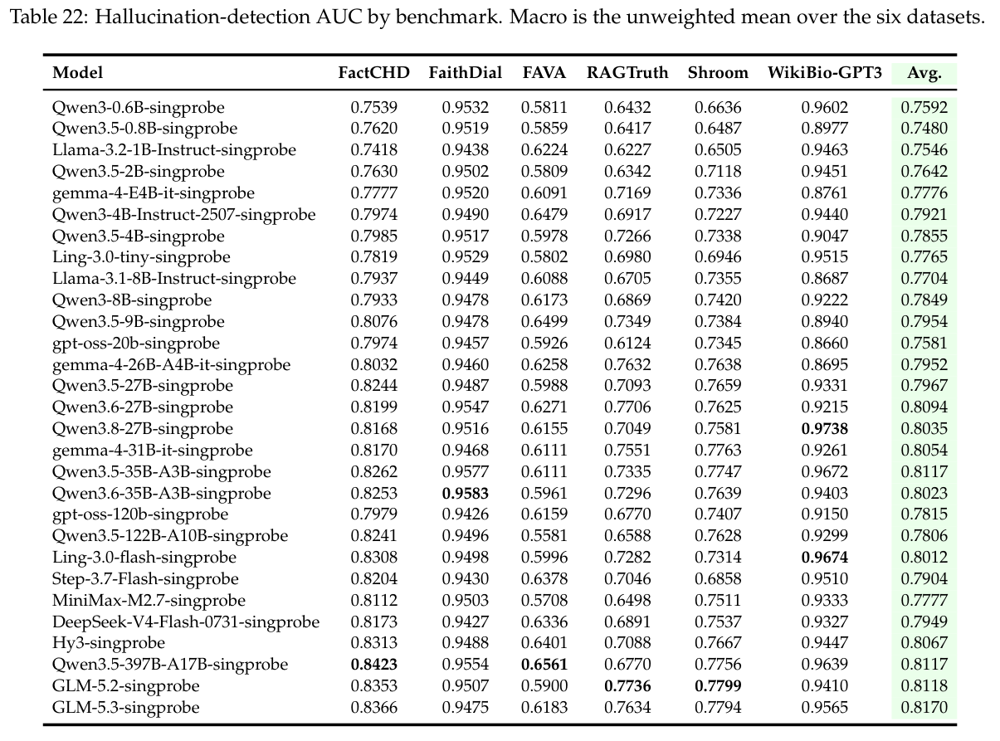